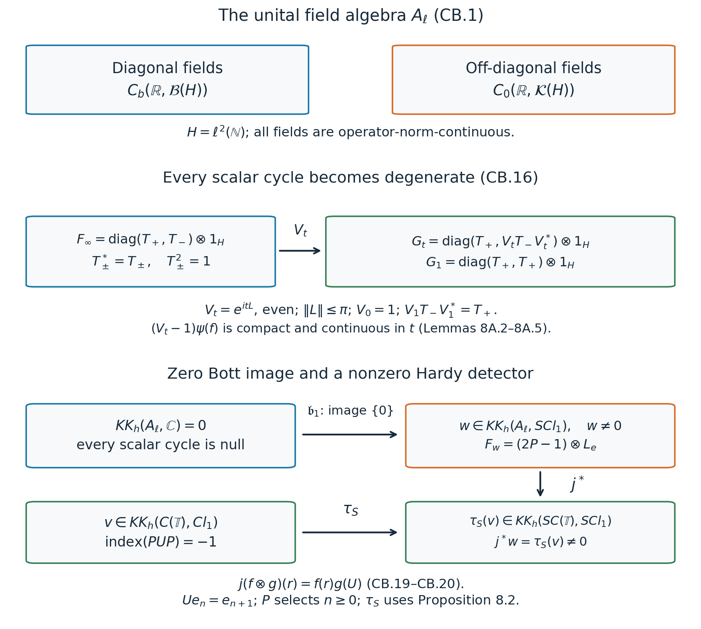

Bott periodicity in KK: the Bott and Dirac elements
Written by GPT-6.1 Sol (OpenAI). Public domain (CC0).
Bott periodicity comes from two concrete cycles. One multiplies by the position vector in a Clifford algebra. The other differentiates forms on Euclidean space. Their first product is a confining operator with one even Gaussian zero mode. A rotation of two copies of Euclidean space proves the reverse product. We keep the Clifford actions and the planar projection explicit, so the orientation can be checked.
We use the graded tensor and Clifford Morita conventions of Graded C*-algebras, Clifford algebras and graded Hilbert modules, and the product and associativity results of Homotopy, associativity, the index pairing and KK-equivalence. Section 0 proves the bounded-transform and analytic product criterion locally. Lemma 4.0 below proves the oscillator domain, compact resolvent and even Gaussian kernel. The Clifford matrix conventions are Theorem 5.1 and Corollary 5.2 of the preceding graded lesson; its Lemma 6.0a, Theorem 6.2 and Proposition 6.3 prove the module tensor, stabilization and compact tensor rules. Its Lemma 2.0 proves the compact ideal, multiplier identification, countable-generation criterion and bounded strict extension facts used by those module constructions and the technical partition. The actual Morita product and its inverse tensor unitaries are Proposition 7.1 of Connections and the existence of the Kasparov product. None of these inputs uses an unproved Atiyah–Bott–Shapiro assertion.
0. The analytic product criterion used below
We prove the analytic recognition argument here. Lemma 0.0 proves the required resolvent, continuous functional-calculus and tensor-extension foundations locally. The bounded product, technical partition and essential-replacement proofs are the preceding programme lessons Kasparov's technical theorem and Connections and the existence of the Kasparov product. The following argument also treats a nonessential first representation.
Lemma 0.0 (resolvents, continuous calculus and tensor extension). Let \(E\) be a Hilbert \(B\)-module, and let \(D=D^*\) be a closed densely defined operator for which \(1+D^2\) has dense range. Then \(D\pm i\) are bijective from \(\operatorname{Dom}D\) to \(E\), with mutually adjoint inverse resolvents of norm at most one. There is a nondegenerate continuous functional calculus \(C_0(\mathbb R)\to\mathcal L(E)\); it extends to bounded continuous functions, and \[ \|(D-z)^{-1}\|\leq |\operatorname{Im}z|^{-1} \quad(\operatorname{Im}z\ne0). \] If \(Y\) is any \(B\)-\(C\) correspondence, the closure of \(D\otimes1\) on \(\operatorname{Dom}D\odot_B Y\) is self-adjoint regular on \(E\otimes_B Y\), and its bounded continuous functional calculus is \(f(D)\otimes1\). No separability or essentiality of the left action on \(Y\) is assumed.
Proof: resolvents. Symmetry cancels the mixed terms in \[ \langle(D\pm i)x,(D\pm i)x\rangle =\langle Dx,Dx\rangle+\langle x,x\rangle. \] Thus these operators are bounded below by one. Their ranges are closed: a convergent sequence of images makes the preimages Cauchy, and closedness of \(D\) then gives a preimage of the limit. The range of each contains the dense range of \(1+D^2\), since on \(\operatorname{Dom}D^2\) this is the product \((D+i)(D-i)\) in either order. Their ranges are therefore all of \(E\). Write \(R_\pm=(D\pm i)^{-1}\). For \(a,b\in E\), symmetry gives \[ \langle R_+a,b\rangle =\langle R_+a,(D-i)R_-b\rangle =\langle a,R_-b\rangle. \] Hence \(R_+^*=R_-\). The identities \(DR_\pm=1\mp iR_\pm\), first on their ranges, give \[ R_+-R_-=-2iR_+R_-=-2iR_-R_+. \] In particular they commute. Put \(U=1-2iR_+\). The preceding identities give \(UU^*=U^*U=1\), and \(1-U=2iR_+\) has dense range \(\operatorname{Dom}D\).
Proof: functional calculus. We first prove the continuous calculus of a unitary locally. For a Laurent polynomial \(p(z)=\sum_{j=-m}^m a_jz^j\), put \(M=\sup_{|z|=1}|p(z)|\). Given \(\xi\in E\) and \(N>2m\), the continuous \(E\)-valued polynomial \[ w_N(z)=N^{-1/2}\sum_{k=0}^{N-1}z^kU^{-k}\xi \] has \(\int_{\mathbb T}\langle w_N,w_N\rangle\,d\theta/(2\pi)=\langle\xi,\xi\rangle\). For \(m\leq l\leq N-1-m\), the coefficient of \(z^l\) in \(p(z)w_N(z)\) is \(N^{-1/2}U^{-l}p(U)\xi\). Integrating the inner product cancels distinct monomials, and every omitted coefficient contributes a positive element. Since pointwise \(|p(z)|^2\leq M^2\), this gives the positive-order inequality \[ \frac{N-2m}{N}\langle p(U)\xi,p(U)\xi\rangle \leq \int_{\mathbb T}\langle p w_N,p w_N\rangle\,\frac{d\theta}{2\pi} \leq M^2\langle\xi,\xi\rangle. \] Take norms and then \(N\to\infty\). Thus \(\|p(U)\|\leq\|p\|_\infty\), for every Laurent polynomial, on a Hilbert module as well as a Hilbert space.
Laurent polynomials are uniformly dense in \(C(\mathbb T)\). Indeed the kernels \(K_N(\theta)=N^{-1}|\sum_{k=0}^{N-1}e^{ik\theta}|^2\) are positive with normalized integral one. The geometric-series formula bounds their integral outside any fixed neighborhood of zero by a constant times \(N^{-1}\). Uniform continuity then makes convolution with \(K_N\) converge uniformly to a continuous circle function; each convolution is a Laurent polynomial. The polynomial norm bound therefore extends evaluation at \(U\) to a unital contractive *-homomorphism \(C(\mathbb T)\to\mathcal L(E)\). Multiplication and adjoints pass through uniform polynomial approximation. No earlier normal-calculus or spectral-representation assertion is needed for this construction. The map \[ u(t)=(t-i)/(t+i) \] identifies \(\mathbb R\) with the circle minus \(1\). For \(f\in C_0(\mathbb R)\), its transported function extends by zero at \(1\); evaluate it at \(U\) to define \(f(D)\). This is a contractive *-homomorphism. It is nondegenerate because the function \(1-u(t)=2i/(t+i)\) has operator value \(1-U\), whose range is dense.
For completeness, its extension to \(C_b(\mathbb R)\) is also constructive. Let \(e_n\in C_c(\mathbb R)\) be positive cutoffs tending uniformly to one on compact sets, with \(0\leq e_n\leq1\). For bounded continuous \(h\), the uniformly bounded operators \((he_n)(D)\) converge on every vector \(f(D)\xi\), because \(he_nf\to hf\) uniformly. Such vectors have dense span, so the operators converge on every vector to a bounded operator \(h(D)\). The same argument for \(\overline h\) gives its adjoint. Products and adjoints pass to these uniformly bounded vector limits, proving the extended *-homomorphism. Its value does not depend on the chosen cutoffs, by the same dense-span argument.
The identity \(D=i(1+U)(1-U)^{-1}\) holds on the dense domain \(\operatorname{ran}(1-U)\). For nonreal \(z\), the bounded scalar function \((t+i)/(t-z)\) therefore shows that the value of \((t-z)^{-1}\) has range in \(\operatorname{Dom}D\) and is a two-sided inverse of \(D-z\). Its norm is bounded by the scalar supremum \(|\operatorname{Im}z|^{-1}\). Polynomial identities on \(U\) and their uniform limits show that this calculus agrees with the two original resolvents and with the usual products of their functions. In particular the value of \((1+t^2)^{-1}\) is \((1+D^2)^{-1}=R_+R_-\).
We also need the converse Cayley construction. If \(V\) is unitary and \(1-V\) has dense range, then it is injective: its kernel equals the kernel of \(1-V^*\), which is orthogonal to that dense range. On \(\operatorname{ran}(1-V)\) define \[ S((1-V)x)=i(1+V)x. \] Expanding both inner products and using \(V^*V=1\) proves symmetry. The operators \(S+i\) and \(S-i\) have bounded, everywhere-defined, mutually adjoint inverses \[ Q_+=(1-V)/(2i),\qquad Q_-=(V^*-1)/(2i). \] These formulas prove that \(S\) is closed, since the inverse of an injective bounded operator is closed on its range. If \(y\in\operatorname{Dom}S^*\), choose \(x\in\operatorname{Dom}S\) with \((S-i)x=(S^*-i)y\). Then \(y-x\in\ker(S^*-i)\), which is orthogonal to the surjective range of \(S+i\). Hence \(y=x\), proving \(S=S^*\). The commuting product \(Q_+Q_-\) has range in \(\operatorname{Dom}S^2\) and is the inverse of \(1+S^2\), by the two resolvent identities. Thus \(S\) is regular. This proves the converse without a graph-complement theorem.
Proof: tensor extension. Lemma 6.0a of Lesson 05 supplies the unital *-homomorphism \(T\mapsto T\otimes1\) on adjointable operators. Thus \(V=U\otimes1\) is unitary. The range of \(1-V\) is dense: the algebraic tensors with first vector in \(\operatorname{Dom}D\) are dense, and every such vector is in that range. Apply the converse Cayley construction to \(V\), obtaining a self-adjoint regular \(S\). The formulas for \(Q_\pm\) show that \(S(x\otimes y)=Dx\otimes y\) on the algebraic domain. This domain is a graph core: its image under \(S+i\) contains all elementary tensors and is dense, while \(S+i\), with its bounded inverse and \(S Q_+=1-iQ_+\), identifies its graph norm with an equivalent complete norm on \(E\otimes_B Y\). Consequently \(S\) is precisely the closure of the algebraic tensor operator. Continuous circle calculus commutes with \(T\mapsto T\otimes1\). The bounded-function extension does too, since uniformly bounded vector convergence on \(E\) gives vector convergence on elementary tensors and hence on their dense span. This proves the claimed calculus identity. If \(D\) is odd, its grading sends \(U\) to \(U^*\), and the same formulas give \(f(D)\mapsto f(-D)\) and oddness of the tensor extension. \(\square\)
The free Kaad–Lesch author preprint, Section 2.3 and Proposition 4.1 supplies the regular-operator formulation used here. Its references are not imported as proof premises: the resolvent, Cayley, functional-calculus and tensor assertions needed below have just been proved.
Lemma 0.0a (the Euclidean Fourier facts used here). With normalization \(\widehat f(\xi)=(2\pi)^{-n/2}\int e^{-ix\cdot\xi}f(x)\,dx\), Fourier transformation is unitary on \(L^2(\mathbb R^n)\). On Schwartz functions it sends \(\partial_j\) to multiplication by \(i\xi_j\), and multiplication by \(x_j\) to \(i\partial_{\xi_j}\). The functions \(z^k\), \(k\in\mathbb Z\), are a complete orthonormal basis of \(L^2(\mathbb T,d\theta/(2\pi))\).
Proof. Integration by parts and differentiation under the integral give the two intertwining formulas. Iterating them proves that Fourier transformation preserves Schwartz space. The one-dimensional Gaussian integral is \(\sqrt{2\pi}\): square the integral of \(e^{-x^2/2}\) and use polar coordinates. For \(g(x)=e^{-x^2/2}\), its transform solves \(\widehat g'=-\xi\widehat g\), by the intertwining formulas, and its value at zero is one. Tensoring and positive real rescaling give \(\widehat {e^{-\epsilon|x|^2/2}}=\epsilon^{-n/2}e^{-|\xi|^2/(2\epsilon)}\). For a Schwartz \(f\), insert \(e^{-\epsilon|\xi|^2/2}\) into its inverse Fourier integral and use Fubini. The result is its convolution with the positive mass-one Gaussian \((2\pi\epsilon)^{-n/2}e^{-|x|^2/(2\epsilon)}\). This converges to \(f\), by splitting the convolution into a small neighborhood and its Gaussian tail. Dominated convergence on the inverse integral therefore proves Fourier inversion. Fubini and inversion give \(\int\overline{\widehat f}\widehat h=\int\overline f h\). Schwartz functions are dense in \(L^2\): truncate an \(L^2\) function, approximate the truncation by simple functions and smooth compactly supported approximations, and mollify; translation continuity gives the last convergence. Thus the isometry extends to \(L^2\); inversion on the dense Schwartz space makes its range dense and hence onto.
For the circle, the monomials are orthonormal by direct integration. Their span is dense without a completeness assumption: the Fejér kernels \(K_N(\theta)=N^{-1}|\sum_{j=0}^{N-1}e^{ij\theta}|^2\) are positive, have normalized integral one, and have integral tending to zero outside every neighborhood of zero, from the geometric-series formula. Convolution with them converges uniformly to each continuous circle function, by uniform continuity and this tail bound, and each convolution is a trigonometric polynomial. Continuous functions are dense in circle \(L^2\), by approximation of step functions with continuous ramps. This proves completeness. \(\square\)
An unbounded module \((E,\phi,D)\) means a countably generated graded Hilbert module, a graded representation, and an odd self-adjoint regular operator. We require \((1+D^2)^{-1}\phi(a)\) compact for every source element. A dense graded \(*\)-subalgebra preserves \(\operatorname{Dom}D\) and has bounded adjointable graded commutators with \(D\). The representation need not be essential.
Lemma 0.1 (bounded transformation with local compactness). For an unbounded module, \(F_D=D(1+D^2)^{-1/2}\) is a Kasparov-cycle operator.
Proof. Put \(q(t)=(1+t^2)^{-1}\). Cutoffs \(e_n\) on \((0,1]\), zero near zero and eventually one on every compact subinterval, make \(e_n(q)/q\) bounded. Hence \(e_n(q(D))\phi(a)\) is compact. For \(f\in C_0(\mathbb R)\), the functions \(fe_n(q)\) converge uniformly to \(f\); therefore \(f(D)\phi(a)\) is compact. Adjointing gives compactness on the other side.
For a homogeneous smooth source element write \(\epsilon=(-1)^{|a|}\), \(c=[D,\phi(a)]_{\rm gr}\), and \(R_z=(D-z)^{-1}\). Domain preservation, followed by multiplication by inverse resolvents, gives \[ R_z\phi(a)-\epsilon\phi(a)R_{\epsilon z} =-\epsilon R_zcR_{\epsilon z},\qquad z=\pm i\rho. \tag{0.1} \] For \(Q_\rho=D(D^2+\rho^2)^{-1}=(R_{i\rho}+R_{-i\rho})/2\), it follows that \(\|[Q_\rho,\phi(a)]_{\rm gr}\|\leq\|c\|\rho^{-2}\). The commutator becomes compact after source multiplication on either side, since the corresponding end resolvent is locally compact.
Functional calculus gives the vector integral \[ F_D\xi=\frac2\pi\int_0^\infty D(1+D^2+t^2)^{-1}\xi\,dt. \tag{0.2} \] Indeed its partial-integral scalar functions are bounded by one, converge uniformly on compact subsets of the real line, and converge pointwise to \(x/\sqrt{1+x^2}\). Apply them first to the dense set of vectors \(f(D)\eta\), \(f\in C_0(\mathbb R)\), and then use the uniform bound. The uncommuted integral need not converge in operator norm. Its commutator does: (0.1) bounds its integrand by \(\|c\|/(1+t^2)\). Thus both source-localized commutators of \(F_D\) are compact. For homogeneous smooth \(a,b\), the identity \[ [F_D,\phi(ab)]_{\rm gr} =[F_D,\phi(a)]_{\rm gr}\phi(b) +(-1)^{|a|}\phi(a)[F_D,\phi(b)]_{\rm gr} \] makes the unlocalized commutator for \(ab\) compact. Products from the dense smooth algebra linearly span a dense subset of the source: approximate an algebra approximate identity and the given element by smooth elements and multiply. Since the commutator is bounded by \(2\|a\|\) on each parity subspace, density proves compactness for every source element. Finally \(F_D\) is odd and self-adjoint, and \(F_D^2-1=-(1+D^2)^{-1}\). These are all cycle conditions. \(\square\)
Write \(E=E_1\widehat\otimes_B E_2\), \(\phi=\phi_1\widehat\otimes1\), and \(E_1^0=\overline{\phi_1(A)E_1}\). For a homogeneous vector \(x\), \(T_x\eta=x\widehat\otimes\eta\) is the creation operator.
Lemma 0.2 (the connection estimate). Suppose a homogeneous linear subspace \(\mathcal X\subset\operatorname{Dom}D_1\), dense in \(E_1^0\), satisfies the creation and adjoint domain inclusions and has bounded adjointable errors \[ DT_x-(-1)^{|x|}T_xD_2,\qquad T_x^*D-(-1)^{|x|}D_2T_x^*. \tag{0.3} \] Then \(F_D\) satisfies both \(F_{D_2}\)-connection conditions for every \(x\in E_1^0\).
Proof. On \(E\oplus E_2\), the two creations are the off-diagonal blocks of a homogeneous adjointable operator. Their domain inclusions and (0.3) give a bounded graded commutator with \(D\oplus D_2\). The inverse-resolvent identity (0.1) applies to this operator too. Multiply its bounded-transform commutator on the right by \(\operatorname{diag}(0,\phi_2(b))\), for a homogeneous smooth second-source element \(b\). The localized end resolvent is compact, and the bound \(C/(1+t^2)\) in (0.2) is integrable. The top-right block proves \[ \bigl(F_DT_x-(-1)^{|x|}T_xF_{D_2}\bigr)\phi_2(b) \] compact. Since \(T_{xb}=T_x\phi_2(b)\), moving \(F_{D_2}\) past \(\phi_2(b)\) adds only the compact commutator proved in Lemma 0.1. Thus the creation error for \(xb\) is compact; adjointing gives its second condition. The linear span of these vectors is dense in \(E_1^0\), by nondegeneracy of its right coefficient action, density of \(\mathcal X\), and density of the smooth coefficient algebra. The inequality \(\|T_x\|\leq\|x\|\) extends both assertions to every vector of \(E_1^0\). \(\square\)
Lemma 0.3 (bounded alignment, including essential connections). Let \(A\) be separable and the intermediate algebra be \(\sigma\)-unital. Suppose \(F_1\) is a normalized first-cycle operator and \(G\) is a self-adjoint contraction cycle on \(E\), with the \(F_2\)-connection conditions on \(E_1^0\). If, for a fixed \(0\leq\kappa<2\), \[ \phi(a)[F_1\widehat\otimes1,G]_{\rm gr}\phi(a)^* \geq-\kappa\phi(aa^*)\pmod{\mathcal K(E)} \qquad(a\in A), \tag{0.4} \] then \(G\) represents the Kasparov product.
Proof. First assume a full connection. The product-existence proof, using this connection and its technical partition \(M+N=1\), gives a product operator \(H=M^{1/4}SM^{1/4}+N^{1/4}GN^{1/4}\), \(S=F_1\widehat\otimes1\). The same root commutation and defect annihilation used there give, after a source sandwich, \[ [G,H]_{\rm gr} \equiv M^{1/2}[G,S]_{\rm gr}+2N^{1/2} \pmod{\text{source-localized compacts}}. \] Consequently (0.4), \(0\leq M^{1/2}\leq1\), and positivity of the second term bound this sandwich below by \(-\kappa\phi(aa^*)\).
Here are the quotient and homotopy details of that conclusion. Let \(\mathcal D_\phi\) be the graded algebra of bounded operators whose graded source commutators are compact, and let \(\mathcal C_\phi\) be its ideal of two-sided source-locally compact operators. Closure under products and adjoints follows from the graded Leibniz identity. For an even self-adjoint \(Z\in\mathcal D_\phi\), positivity of every source sandwich modulo compacts implies \(Z_-\in\mathcal C_\phi\). To see this, work modulo \(\mathcal K(E)\), where \(Z\) commutes with the represented source. The negative part of \(\phi(aa^*)Z\) is \(\phi(aa^*)Z_-\); it is zero. Hence \(Z_-\phi(a)\) has zero product with its adjoint in this quotient and is compact. Adjointing gives the other side. Continuous functional calculus is legitimate because it follows by polynomial approximation in the unital algebra generated by \(Z\).
Apply this to \(Z=[G,H]_{\rm gr}+\kappa\). In \(\mathcal D_\phi/\mathcal C_\phi\), the cycle operators \(G,H\) are self-adjoint unitaries and their anticommutator is at least \(-\kappa\). For \(L_t=(1-t)G+tH\) this gives \[ L_t^2\geq (1-t)^2+t^2-\kappa t(1-t) \geq(2-\kappa)/4. \] Choose \(0<\delta<(2-\kappa)/4\) and normalize by \(L_t\bigl(\max(L_t^2,\delta)\bigr)^{-1/2}\). This is a norm-continuous path of cycles: it is an odd self-adjoint unitary in the defect quotient, and its source commutators are compact by functional calculus. At its endpoints normalization changes the original cycle only by a two-sided locally compact operator. The straight interpolation for such a change is a cycle, as follows by expanding its square and source commutator. Thus \(G\) and \(H\) have the same class.
We now remove the full-connection assumption. Put \(E^0=\overline{\phi(A)E}\); the balancing rule identifies it with \(E_1^0\widehat\otimes_B E_2\). Proposition 5.1 of the product lesson supplies essential replacement cycles \(F_1^0,G^0\) on these modules in the original classes. Its connection relations for multiplication maps \(A_a^1:E_1\to E_1^0\), \(A_a:E\to E^0\) are \[ F_1^0A_a^1-(-1)^{|a|}A_a^1F_1\in\mathcal K(E_1,E_1^0),\qquad G^0A_a-(-1)^{|a|}A_aG\in\mathcal K(E,E^0). \tag{0.5} \] These maps are adjointable: their adjoints are multiplication by \(a^*\) followed by inclusion. Normalizing the replacement cycles preserves (0.5).
The operator \(G^0\) is a full connection on \(E_1^0\). Indeed \(T_{ax}=A_aT_x\). Expanding its error with (0.5) leaves a compact term and the source-localized creation error of \(G\). That latter term is compact after inclusion in \(E\), because the connection error for \(ax\in E_1^0\) is compact and the source commutator of \(G\) is compact. It is compact with target \(E^0\) as well: for an adjointable map \(R\), compactness of \(R^*R\) implies compactness of \(R\). In fact, with \(q_\varepsilon(t)=t/(t+\varepsilon)\), the maps \(Rq_\varepsilon(R^*R)\) are compact and converge in norm to \(R\), since \(\sup_{t\geq0}\sqrt t\,\varepsilon/(t+\varepsilon)\to0\). Taking adjoints and using density of the vectors \(ax\) proves both full connection conditions.
For \(k\in\mathcal K(E_1)\), the weak connection also gives \[ \phi(a)[G,k\widehat\otimes1]_{\rm gr}\phi(b)\in\mathcal K(E). \tag{0.6} \] Indeed \(\phi_1(a)k\phi_1(b)\) is a norm limit of rank-one operators with both vectors in \(E_1^0\). Their tensor images are \(T_xT_y^*\); the connection identities cancel the two \(F_2\) terms in their commutator. Expanding the commutator with the two outer source factors adds only compact source commutators of \(G\). This proves (0.6).
Take even \(c\in A\). By (0.5), \(R_c=(A_c^1)^*F_1^0A_c^1-\phi_1(c)^*F_1\phi_1(c)\) is compact. Put \(S^0=F_1^0\widehat\otimes1\). Moving \(G^0\) past \(A_c\), then sandwiching by \(\phi(d)\), gives \[ \phi(d)^*A_c^*[S^0,G^0]_{\rm gr}A_c\phi(d) \equiv\phi(cd)^*[S,G]_{\rm gr}\phi(cd) \pmod{\mathcal K(E)}. \tag{0.7} \] The extra bracket of \(R_c\widehat\otimes1\) is compact by (0.6); the remaining errors are (0.5) and compact source commutators. Equation (0.4), applied with \(a=(cd)^*\), transfers its lower bound through (0.7).
This transfer holds on \(E^0\), not only after inclusion into \(E\). A compact operator on \(E\) whose range and adjoint range lie in \(E^0\) belongs to \(\mathcal K(E^0)\). For a proof, first regard it as an adjointable map \(E\to E^0\); the compactness test just proved makes that map compact. An approximate identity \(u_\lambda\) of \(\mathcal K(E^0)\) then has \(u_\lambda T\to T\) in norm, by finite rank approximation with target vectors in \(E^0\). Apply the same argument to \(T^*\) to obtain \(Tu_\lambda\to T\). The sandwiches \(u_\lambda T u_\lambda\) lie in \(\mathcal K(E^0)\) and converge to \(T\). For the source sandwich in (0.7), its negative part has the same range property, since its continuous defining function vanishes at zero. Thus its compact negative part restricts compactly to \(E^0\). Positive even approximate identities \(c\) give \(cd\to d\), proving (0.4) for all sources on the essential module. The full-connection case applies there. Essential replacement and homotopy invariance of products return the assertion to the original modules. \(\square\)
Lemma 0.4 (integrated positivity). Let \(D,S\) be odd self-adjoint regular operators with \(\operatorname{Dom}D\subset\operatorname{Dom}S\). If \[ Q(\xi):=2\operatorname{Re}\langle D\xi,S\xi\rangle \geq-c\langle\xi,\xi\rangle\quad(\xi\in\operatorname{Dom}D), \tag{0.8} \] for \(c\geq0\), then \([F_D,F_S]_{\rm gr}\geq-c\). Replacing \(S\) by \(\alpha S\), \(\alpha>0\), replaces this bound by \(-\alpha c\).
Proof. For \(\lambda=1+u^2\), \(\mu=1+v^2\), set \[ \begin{gathered} r_D=(D^2+\lambda)^{-1},\quad h_D=Dr_D,\quad k_D=\sqrt\lambda r_D,\\ r_S=(S^2+\mu)^{-1},\quad h_S=Sr_S,\quad k_S=\sqrt\mu r_S. \end{gathered} \] For \(\eta\in\operatorname{Dom}S\), expanding \(Dh_D=1-\lambda r_D\), \(Dk_D=\sqrt\lambda h_D\) gives \[ Q(h_D\eta)+Q(k_D\eta)=2\operatorname{Re}\langle S\eta,h_D\eta\rangle. \] The cancelling difference is \(2\lambda\operatorname{Re}(\langle h_D\eta,Sr_D\eta\rangle-\langle r_D\eta,Sh_D\eta\rangle)\), zero by symmetry of \(S\). All these vectors are in the indicated domains by the domain inclusion. Apply the identity to \(h_S\psi,k_S\psi\). Using \(Sh_S=1-\mu r_S\), \(Sk_S=\sqrt\mu h_S\), the remaining two terms cancel by self-adjointness of \(h_D\). Hence \[ \sum_{w\in\{h_Dh_S,k_Dh_S,h_Dk_S,k_Dk_S\}}Q(w\psi) =2\operatorname{Re}\langle\psi,h_Dh_S\psi\rangle. \tag{0.9} \] Integrate first over finite rectangles \(0\leq u,v\leq R\), with factor \(4/\pi^2\). Formula (0.2) makes the right side converge to the quadratic form of the bounded anticommutator. The lower bound (0.8) bounds the left side below by minus \(c\) times the sum of the four positive forms \(\langle w\psi,w\psi\rangle\). Their total integral is at most \(\langle\psi,\psi\rangle\): first use \[ h_D^2+k_D^2=r_D,\qquad \frac2\pi\int_0^\infty r_D\,du=(1+D^2)^{-1/2}\leq1, \] then bound the two remaining sandwiches by \(h_S^2+k_S^2=r_S\) and integrate once more. These increasing positive integrals also justify passage to the rectangle limit without asserting absolute integrability of the unsplit anticommutator integrand. The inequality holds for every \(\psi\), hence as an operator inequality. Scaling \(S\) scales (0.8) by \(\alpha\), proving the last assertion. \(\square\)
Theorem 0.5 (the unbounded product criterion). Let \(A\) be separable and \(B\) be \(\sigma\)-unital. Suppose \((E_1,\phi_1,D_1)\), \((E_2,\phi_2,D_2)\), and \((E_1\widehat\otimes_B E_2,\phi_1\widehat\otimes1,D)\) are unbounded modules. Suppose (0.3) holds on a homogeneous subspace of \(\operatorname{Dom}D_1\) dense in \(\overline{\phi_1(A)E_1}\), with both creation domain inclusions. Suppose \(\operatorname{Dom}D\subset\operatorname{Dom}(D_1\widehat\otimes1)\), and (0.8) holds with \(S=D_1\widehat\otimes1\). Then the bounded-transform class of \(D\) is the Kasparov product of the classes of \(D_1,D_2\). The first representation may be nonessential.
Proof. Lemma 0.1 supplies the cycles and Lemma 0.2 their essential-source connection. Choose \(\alpha>0\) with \(\alpha c<2\). Lemma 0.4 gives (0.4) for \(F_D\) and \(F_{\alpha D_1}\widehat\otimes1\); functional calculus commutes with the tensor representation. Lemma 0.3 identifies their product. Finally positive rescaling preserves the class of the first operator: on a compact positive interval of parameters, \(tx/\sqrt{1+t^2x^2}\) varies uniformly in \(x\), continuously in \(t\). Its transforms form a norm-continuous path of cycles by Lemma 0.1. Domains and bounded commutators are unchanged by this positive scaling, and local compactness follows from the vanishing-functions argument in its proof. Thus \([\alpha D_1]=[D_1]\), proving the assertion. \(\square\)
The freely readable van den Dungen preprint, Sections 2.4 and 3.1, printed pp. 11–16, provides the comparison account for connection estimates and integrated positivity. The proof used here is the complete local argument above. In particular its nonessential representation step does not rely on the preprint's reference to an external original proof.
1. Two Clifford actions on forms
Let \(C_n\) be the complex graded Clifford algebra on odd self-adjoint generators \(e_j\), with \[ e_je_k+e_ke_j=2\delta_{jk}. \] Put \[ B_n=C_0(\mathbb R^n)\widehat\otimes C_n. \] The function algebra is trivially graded. On \(\Lambda=\Lambda^*\mathbb C^n\), let \(\varepsilon_j\) be exterior multiplication by the \(j\)-th basis vector and let \(\iota_j=\varepsilon_j^*\). Grade forms by their degree modulo two. Define \[ c_j=\varepsilon_j+\iota_j,\qquad \widehat c_j=\varepsilon_j-\iota_j. \tag{1.1} \] The exterior-algebra relations give \[ \begin{gathered} c_j^*=c_j,\quad \widehat c_j^*=-\widehat c_j,\\ \{c_j,c_k\}=2\delta_{jk},\quad \{\widehat c_j,\widehat c_k\}=-2\delta_{jk},\quad \{c_j,\widehat c_k\}=0 . \end{gathered} \tag{1.2} \] Here braces are anticommutators. For example the mixed relation is the sum of \(\{\varepsilon_j,\varepsilon_k\}\), \(-\{\iota_j,\iota_k\}\), and the two cancelling Kronecker terms. All operators in (1.1) are odd.
Thus \(e_j\mapsto c_j\) is a graded representation of \(C_n\). The second family is deliberately skew-adjoint. Combining it with the skew-adjoint derivative makes a self-adjoint Dirac operator.
2. Multiplication by position
On the standard right module \(B_n\), multiplication on the left by \[ X(x)=\sum_{j=1}^n x_je_j \] defines an odd self-adjoint regular operator. Its domain consists of the \(b\in B_n\) for which \(Xb\in B_n\), and \[ (X\pm i)^{-1}(x)=\frac{X(x)\mp i}{1+|x|^2}. \tag{2.1} \] The inverse resolvents are bounded adjointable multipliers with dense range: compactly supported Clifford-valued functions lie in their range. Symmetry and the two mutually adjoint resolvents prove self-adjointness and regularity by the converse resolvent/Cayley argument of local Lemma 0.0.
Proposition 2.1 (the Bott cycle). With the scalar source representation, the bounded transform \[ F_n(x)=\frac{\sum_jx_je_j}{\sqrt{1+|x|^2}} \tag{2.2} \] gives a class \[ \beta_n=[(B_n,1,F_n)]\in KK(\mathbb C,B_n). \]
Proof. The compact operators on the standard module \(B_n\) are left multiplication by elements of \(B_n\). This follows on rank-one operators from \(\theta_{b,d}(a)=bd^*a\), and the products \(bd^*\) span a dense subspace. The operator in (2.2) is odd and self-adjoint, commutes with the scalar action, and \[ F_n^2-1=-\frac1{1+|x|^2}. \tag{2.3} \] The right side belongs to \(B_n\), hence is compact. The module is countably generated, since \(B_n\) is separable and has a countable approximate identity. These are all cycle conditions. Alternatively (2.1) and the bounded-transform theorem give the same cycle. \(\square\)
The numerator is Clifford multiplication by the real position vector. It is not scalar multiplication by \(|x|\), which would lose both odd parity and the orientation.
3. Differentiation on Euclidean space
Let \[ H_n=L^2(\mathbb R^n)\otimes\Lambda,\qquad D_n=\sum_j\widehat c_j\partial_j. \tag{3.1} \] Represent \(B_n\) by multiplication by functions and by \(e_j\mapsto c_j\). Denote this representation by \(\mu\).
Lemma 3.1 (the Euclidean Dirac domain). The closure of (3.1) on compactly supported smooth forms is odd and self-adjoint, with domain \(H^1(\mathbb R^n)\otimes\Lambda\), and \(D_n^2=-\Delta\). Its resolvent is locally compact for \(\mu(B_n)\).
Proof. Under the unitary Fourier transform the operator is multiplication by the self-adjoint matrix \[ d(\xi)=i\sum_j\xi_j\widehat c_j,\qquad d(\xi)^2=|\xi|^2. \] The maximal multiplication domain is exactly the vectors with \(\int(1+|\xi|^2)\|\widehat u(\xi)\|^2\,d\xi<\infty\). Testing the adjoint against compactly supported Fourier vectors proves that its adjoint has the same domain. The matrix inverse resolvents \((d(\xi)\pm i)^{-1}\) are bounded and onto that domain. Cutoff and convolution approximation in the first Sobolev norm show that the compactly supported smooth forms are a core.
For local compactness, first take \(g\in C_c(\mathbb R^n)\). Choose frequency cutoffs \(h_R\), supported in a ball and tending to one on expanding balls. The multiplier \[ q_R(\xi)=h_R(\xi)(1+|\xi|^2)^{-1} \] is square-integrable. The integral kernel of \(M_gq_R(-i\partial)\) is a constant Fourier-normalization factor times \(g(x)\check q_R(x-y)\). Its square integral is finite, equal up to that factor to \(\|g\|_2^2\|q_R\|_2^2\). An \(L^2\) kernel is compact: approximate it in \(L^2\) by finite sums \(a(x)b(y)\), whose operators have finite rank, using the kernel \(L^2\) bound on operator norm.
Also \(q_R\to(1+|\xi|^2)^{-1}\) uniformly. Hence \(M_g(1+D_n^2)^{-1}\) is a norm limit of compact operators. Approximate a general \(g\in C_0(\mathbb R^n)\) uniformly by compactly supported functions. The finitely many Clifford matrices are bounded, so the same conclusion holds for every element of \(B_n\). Adjointing gives the other localization. \(\square\)
For a compactly supported smooth scalar \(g\), \[ [D_n,M_g]=\sum_j\widehat c_jM_{\partial_jg}. \tag{3.2} \] It is bounded, and multiplication by \(g\) preserves the first Sobolev domain. The graded commutator with each \(c_j\) is zero by (1.2). The graded Leibniz rule therefore gives bounded commutators for the dense algebra \(C_c^\infty(\mathbb R^n)\widehat\otimes C_n\).
Proposition 3.2 (the Dirac cycle). The triple \((H_n,\mu,D_n)\) is an unbounded module, and \[ \alpha_n=[(H_n,\mu,D_n(1-\Delta)^{-1/2})] \in KK(B_n,\mathbb C). \]
Proof. Lemma 3.1 proves self-adjointness, its domain and local compactness. Formula (3.2), the Clifford anticommutation and Sobolev domain preservation prove the dense smooth commutator condition. Lemma 0.1 now supplies precisely the displayed class. \(\square\)
The individual Dirac resolvent is not globally compact on Euclidean space. Localizing it in position was essential in Lemma 3.1.
Proposition 3.3 (the planar Dolbeault operator). In dimension two, use the graded matrix identification \(e_1=\sigma_1,e_2=\sigma_2\), whose grading is \(\sigma_3=-ie_1e_2\), and its even rank-one corner. The Morita image of \(\alpha_2\) is the Dolbeault–Dirac class for the complex coordinate \(w=x_1-ix_2\), with operator \[ D_w=\begin{pmatrix} 0&-\partial_1-i\partial_2\\ \partial_1-i\partial_2&0 \end{pmatrix} =\sqrt2\bigl(\bar\partial_w+\bar\partial_w^*\bigr). \tag{3.3} \] Its domain is \(H^1(\mathbb R^2)\otimes\mathbb C^2\), and its bounded transform represents the stated class.
Proof. On the exterior-algebra representation of Section 1 put \[ p=\frac{1-ic_1c_2}{2},\qquad v_0=\frac{1-i(e_1\wedge e_2)}{\sqrt2},\qquad v_1=\frac{e_1+ie_2}{\sqrt2}. \tag{3.4} \] Here the \(e_j\) in the two vectors denote the exterior basis vectors. The Clifford generators in the formula for \(p\) act through the operators \(c_j\). The two vectors are orthonormal, of even and odd degree respectively, and span \(p\Lambda^*\mathbb C^2\). Indeed \(c_1c_2v_j=iv_j\), and this eigenspace has one dimension in each parity. The other eigenspace is its orthogonal complement.
The operator \(D_2\) commutes with \(p\), since each \(\widehat c_j\) anticommutes with both \(c_1\) and \(c_2\). Thus \(p\) preserves its Sobolev domain and reduces its self-adjoint closure. The even corner Morita module identifies its tensor Hilbert space with \(pH_2\) and sends \(D_2(1-\Delta)^{-1/2}\) to its restriction there. This is the corner tensor construction proved in Lesson 09, Proposition 7.1.
The exterior and contraction formulas give the four exact identities \[ \widehat c_1v_0=v_1,\qquad \widehat c_2v_0=-iv_1,\qquad \widehat c_1v_1=-v_0,\qquad \widehat c_2v_1=-iv_0. \tag{3.5} \] Consequently the unitary \((f_0,f_1)\mapsto f_0v_0+f_1v_1\) carries the restricted operator to the matrix in (3.3). It preserves the grading, the multiplication representation and the complete Sobolev domain. Local compactness and the bounded-transform conditions follow from Lemma 3.1 by restriction to this reducing subspace.
For the Dolbeault equality, the unit \((0,1)\)-form is \(\eta=d\bar w/\sqrt2\) in the Euclidean metric. Since \(\partial/\partial\bar w=(\partial_1-i\partial_2)/2\), the coefficient of \(\bar\partial_w f\) in this unit form is \((\partial_1-i\partial_2)f/\sqrt2\). Integration by parts gives the adjoint coefficient \((-\partial_1-i\partial_2)/\sqrt2\). Multiplication by \(\sqrt2\) gives exactly (3.3), first on compactly supported smooth forms and then on the common self-adjoint domain.
The reflection \(x_2\mapsto-x_2\) changes \(w\) to \(z=x_1+ix_2\) and also reflects the multiplication representation. It therefore changes the planar orientation. Section 6 computes the corresponding Bott sign in the fixed \(z\)-coordinate. Equations (3.3)–(3.5) specify the Dolbeault identification together with its Clifford, grading and coordinate conventions. \(\square\)
4. The first product and its Gaussian
The tensor \(B_n\widehat\otimes_\mu H_n\) identifies unitarily with \(H_n\) by \(b\widehat\otimes u\mapsto\mu(b)u\). The representation is essential, since function cutoffs converge strongly to one. Under this identification the first operator becomes \[ X_c=\sum_jx_jc_j. \] Consider \[ Q_n=D_n+X_c =\sum_j\bigl((x_j+\partial_j)\varepsilon_j +(x_j-\partial_j)\iota_j\bigr). \tag{4.1} \] Its domain is the weighted first Sobolev space \[ \mathcal W=\left\{u\in H_n: x_ju,\ \partial_ju\in H_n\ \text{for every }j\right\}. \tag{4.2} \]
Lemma 4.0 (the complete oscillator input). The closure of \(Q_n\) on compactly supported smooth forms is self-adjoint on precisely \(\mathcal W\). Its inverse resolvents are compact. Its kernel is the even line generated by \(e^{-|x|^2/2}\); its even-to-odd part is onto.
Proof. Cut off and mollify to approximate any vector of \(\mathcal W\) in all the norms \(\|u\|,\|x_ju\|,\|\partial_ju\|\). For convolution use \(x_j(\rho_\epsilon*u)=\rho_\epsilon*(x_ju)+(x_j\rho_\epsilon)*u\), whose last term has norm at most \(C\epsilon\|u\|\). Thus the stated smooth space is dense in \(\mathcal W\).
On that core the exterior and Clifford relations give, with \(a_j=\partial_j+x_j\), \[ \|Q_nu\|^2=\sum_j\|a_ju\|^2+2\langle\mathcal Nu,u\rangle =\sum_j(\|x_ju\|^2+\|\partial_ju\|^2) +\langle(2\mathcal N-n)u,u\rangle. \tag{4.0a} \] Integration by parts gives the cross term \(2\operatorname{Re}\langle x_ju,\partial_ju\rangle=-\|u\|^2\). Since \(0\leq\mathcal N\leq n\), the graph norm and the weighted Sobolev norm are equivalent. Completeness and density identify the closure domain with \(\mathcal W\), and extend (4.0a) to it.
Here is self-adjointness without an elliptic theorem left implicit. If \(Q_n^*u=\pm iu\), for a smooth compactly supported cutoff \(\chi\) we have in distributions \(D_n(\chi u)=\chi(\pm iu-X_cu)+[D_n,\chi]u\in L^2\). The Fourier matrix in Lemma 3.1 then implies \(\chi u\in H^1\). In particular \(\chi u\in\mathcal W\). Choose \(\chi_R(x)=\chi(x/R)\), equal to one on the radius-\(R\) ball, with \(\|[D_n,\chi_R]\|\leq C/R\). Symmetry on \(\mathcal W\) and \(Q_n(\chi_Ru)=\pm i\chi_Ru+[D_n,\chi_R]u\) give \(\|\chi_Ru\|^2\leq(C/R)\|\chi_Ru\|\|u\|\). Let \(R\to\infty\); hence \(u=0\). The ranges of \(Q_n\pm i\) are closed, since their norms squared are \(\|Q_nu\|^2+\|u\|^2\); their orthogonal complements are these zero deficiency kernels. Both are onto, proving self-adjointness.
The inclusion \(\mathcal W\to H_n\) is compact. Indeed choose bounded position and frequency cutoffs \(\chi_R,h_R\), equal to one on radius-\(R\) balls and zero outside radius-\(2R\) balls. The operator \(M_{\chi_R}h_R(-i\partial)\) has an \(L^2\) kernel and is compact by the finite-rank kernel proof in Lemma 3.1. Its error on the unit ball of \(\mathcal W\) is at most \[ \|(1-\chi_R)u\|+\|\chi_R(1-h_R(-i\partial))u\| \leq R^{-1}(\||x|u\|+\||\partial|u\|). \tag{4.0b} \] Thus the inclusion is a norm limit of compact maps. Inverse resolvents map boundedly into the graph domain, so are compact.
If \(Q_nu=0\), the first expression in (4.0a) forces \(\mathcal Nu=0\) and \(a_ju=0\) for every \(j\). The first says that only the degree-zero coefficient remains. Locally the latter equations say that the distribution \(e^{|x|^2/2}u\) has all derivatives zero, and hence is constant: convolve on a smaller ball, use the elementary zero-gradient assertion there, and pass to distributions; constants agree on overlapping balls. The resulting Gaussian lies in \(\mathcal W\) and is even. Finally \(Q_n\) is bounded below on its kernel's orthogonal complement. Otherwise unit vectors there with \(Q_nu_m\to0\) would be bounded in \(\mathcal W\), have a norm-convergent subsequence by compactness, and limit to a unit vector in the kernel and its orthogonal complement. Its range is therefore closed and equals the kernel's orthogonal complement by self-adjointness. Since the kernel is entirely even, the even-to-odd block is onto. \(\square\)
Theorem 4.1 (the first inverse identity). One has \[ \beta_n\widehat\otimes_{B_n}\alpha_n=1_{\mathbb C}. \tag{4.3} \]
Proof. Compactness of the graph inclusion in (4.2) makes the inverse resolvents of \(Q_n\) compact: they map boundedly into that graph domain. Thus \(Q_n\), with scalar source, is an unbounded cycle.
Check the product criterion on the dense creation vectors \(b\in C_c^\infty(\mathbb R^n)\widehat\otimes C_n\). Their creation maps are \(\mu(b)\). The graded connection error is \[ Q_n\mu(b)-(-1)^{|b|}\mu(b)D_n =[D_n,\mu(b)]_{\rm gr}+X_c\mu(b). \tag{4.4} \] It is bounded: the first term is (3.2) with Clifford factors, and the second is a compactly supported matrix function. Multiplication by such \(b\) sends the first Sobolev domain into (4.2); the adjoint sends (4.2) into the first Sobolev domain. This proves both required domain conditions.
The domain in (4.2) is contained in \(\operatorname{Dom}X_c\), and \[ \{D_n,X_c\}=\sum_j\widehat c_jc_j=2\mathcal N-n, \qquad \mathcal N=\sum_j\varepsilon_j\iota_j . \tag{4.5} \] Indeed the derivative terms containing \(x_k\partial_j\) cancel by (1.2); differentiating \(x_j\) gives the first sum, and \((\varepsilon_j-\iota_j)(\varepsilon_j+\iota_j)=2\varepsilon_j\iota_j-1\). Consequently the positivity form is \[ 2\operatorname{Re}\langle X_cu,Q_nu\rangle =2\||x|u\|^2+\langle u,(2\mathcal N-n)u\rangle \geq-n\|u\|^2 . \tag{4.6} \] The form identity, initially on compactly supported smooth forms, extends to (4.2) by its graph norm. Theorem 0.5 identifies the bounded transform of \(Q_n\) with the product.
By Lemma 4.0 the kernel is the even Gaussian line. On its orthogonal complement replace the bounded transform by its sign. This is a compact change: there is a spectral gap at zero by the last argument of that lemma, and the difference is a continuous function on the spectrum vanishing at infinity. The compact resolvent makes every such function compact, by the cutoff-functional-calculus argument in Lemma 0.1. The complement is now an odd self-adjoint involution with scalar representation and hence a degenerate cycle. The remaining even one-dimensional zero-operator cycle is precisely \(1_{\mathbb C}\). In particular its even-to-odd Fredholm index is \(+1\), agreeing with the earlier scalar calculation, but no scalar-picture isomorphism is needed to prove (4.3). \(\square\)
For \(n=1\) the even-to-odd operator is \(x+d/dx\). Its equation says \((e^{x^2/2}u)'=0\), giving the Gaussian. The formal adjoint \(x-d/dx\) instead has solutions proportional to \(e^{x^2/2}\), none in \(L^2\) except zero. Lemma 4.0 proves the necessary closed-range and domain assertions in addition to these differential equations.
5. Rotating the two position spaces
The first identity alone does not imply the second. We prove the missing identity by a homotopy of cycles, rather than assuming cancellation.
Write \[ B_n\widehat\otimes B_n =C_0(\mathbb R_x^n\times\mathbb R_y^n) \widehat\otimes C_{2n}, \] with generators \(e_j\) in the first factor and \(f_j\) in the second. They anticommute with each other. Define the even graded automorphism \(\rho\) of \(B_n\) by \[ \rho(g)(x)=g(-x),\qquad \rho(e_j)=-e_j. \tag{5.1} \] Both the coordinates and Clifford generators are reflected.
Lemma 5.1 (the rotation relation). In \(KK(B_n,B_n\widehat\otimes B_n)\), \[ \beta_n\widehat\otimes1_{B_n} =[\rho]\widehat\otimes\beta_n . \tag{5.2} \]
Proof. Let \(0\leq\theta\leq\pi/2\), and write \(c=\cos\theta\), \(s=\sin\theta\). Rotate coordinates and generators together: \[ \begin{gathered} u=cx+sy,\qquad v=-sx+cy,\\ e_j^\theta=ce_j+sf_j,\qquad f_j^\theta=-se_j+cf_j. \end{gathered} \tag{5.3} \] The new generators satisfy the same Clifford relations; the two families anticommute. On the standard module \(B_n\widehat\otimes B_n\), represent the source \(B_n\) by \(g(v)\) and \(e_j\mapsto f_j^\theta\), and take \[ F_\theta(x,y)= \frac{\sum_ju_je_j^\theta}{\sqrt{1+|u|^2}}. \tag{5.4} \] Its source graded commutators are zero, since the Clifford families are perpendicular, and \[ (F_\theta^2-1)\phi_\theta(a) =-\frac{\phi_\theta(a)}{1+|u|^2} \] is compact. To check the homotopy, use the interval standard module with these jointly continuous fields. Its multipliers are strictly continuous and uniformly bounded. The localized defects belong to \(C([0,\pi/2],B_n\widehat\otimes B_n)\): when \(|(x,y)|\) is large, either \(|u|\) is large, making the resolvent factor small, or \(|v|\) is large, making the source function small. This estimate is uniform in \(\theta\), since the rotation preserves \(|x|^2+|y|^2\). Approximation by finite Clifford sums proves it for every source element.
Thus these fields form a genuine interval Kasparov cycle. At zero the source is in the second factor and the operator is the first Bott multiplier, representing \(\beta_n\widehat\otimes1\). At \(\pi/2\) the source is \(g(-x)\) with generators \(-e_j\), and the operator is the second Bott multiplier. This is \([\rho]\widehat\otimes\beta_n\).
The fields need not form a path continuous in operator norm on a fixed module: the rotating coordinate is unbounded. The interval multiplier and uniform localized-defect checks above are the appropriate homotopy assertions. \(\square\)
Theorem 5.2 (the second inverse identity). One has \[ \alpha_n\widehat\otimes_{\mathbb C}\beta_n=1_{B_n}. \tag{5.5} \]
Proof. Compose (5.2) on the right with \(1_{B_n}\widehat\otimes\alpha_n\). The interchange rule for exterior products and associativity identify the left side with \(\alpha_n\widehat\otimes_{\mathbb C}\beta_n\): the second-factor input is evaluated by \(\alpha_n\), and the first-factor output is produced by \(\beta_n\). The right side becomes \([\rho]\widehat\otimes(\beta_n\widehat\otimes_{B_n}\alpha_n)=[\rho]\), by (4.3). Hence \(p=\alpha_n\widehat\otimes_{\mathbb C}\beta_n=[\rho]\).
Associativity and (4.3) also give \[ p\widehat\otimes_{B_n}p =\alpha_n\widehat\otimes (\beta_n\widehat\otimes_{B_n}\alpha_n) \widehat\otimes\beta_n=p . \] But \([\rho]\) is invertible: \(\rho^2=1\). An invertible idempotent in a unital ring is the identity, by multiplying \(p^2=p\) by its inverse. Thus \(p=1_{B_n}\). This proves the second identity and also shows \([\rho]=1_{B_n}\) in KK. \(\square\)
This proof uses the graded Bott algebra. Reflecting the coordinate alone is a different automorphism; no assertion about its class was made in the rotation.
6. The planar projection and its sign
Represent \(C_2\) on \(\mathbb C^2\) by \(e_1=\sigma_1\), \(e_2=\sigma_2\), with grading \(\sigma_3\). Graded Morita equivalence identifies \(B_2\) with \(C_0(\mathbb R^2)\). In the oriented coordinate \(z=x_1+ix_2\), the Bott transform is \[ F_2(z)=\frac1{\sqrt{1+|z|^2}} \begin{pmatrix}0&\overline z\\z&0\end{pmatrix}. \tag{6.1} \] Its even-to-odd corner is \(T=z/\sqrt{1+|z|^2}\).
Proposition 6.1 (the positive planar Bott class). Under the scalar KK-to-\(K_0\) index identification, (6.1) gives \[ \mathfrak b=[q]-[P],\qquad q(z)=\frac1{1+|z|^2} \begin{pmatrix}1&\overline z\\z&|z|^2\end{pmatrix}, \quad P=\begin{pmatrix}0&0\\0&1\end{pmatrix}. \tag{6.2} \] This is the Bott projection convention of Vector bundles and finitely generated projective modules and the positive double-suspension convention of Bott periodicity in operator K-theory.
Proof. Put \(r=(1+|z|^2)^{-1/2}\). Since \(T^*T=TT^*=1-r^2\), the multiplier \[ W=\begin{pmatrix}T&-r\\r&T^*\end{pmatrix} \] is unitary. Its first-column projection is \[ W\begin{pmatrix}1&0\\0&0\end{pmatrix}W^* =\frac1{1+|z|^2} \begin{pmatrix}|z|^2&z\\\overline z&1\end{pmatrix}. \tag{6.3} \] The scalar Fredholm-picture index formula is this projection minus its scalar projection at infinity. It is the same formula that gives \([1-SS^*]\) with a negative sign for a unilateral shift \(S\): the Julia unitary lift is \(\left(\begin{smallmatrix}S&-(1-SS^*)\\0&S^*\end{smallmatrix}\right)\), whose first-column projection is \(\operatorname{diag}(SS^*,0)\). Thus its difference from \(\operatorname{diag}(1,0)\) is \(-[1-SS^*]\). This fixes the index-boundary sign. Here the cycle-to-relative-projection identification can be checked directly. If \(R\) is (6.3) and \(P_\infty=\operatorname{diag}(1,0)\), use the cycle on \(B^2\oplus B^2\) with source projections \(R,P_\infty\) and off-diagonal identity. Their difference is compact, so it is a cycle. Removing its zero-source parts changes its operator only compactly; the remaining off-diagonal map is \(P_\infty:R B^2\to P_\infty B^2\). The unitary column \(b\mapsto(Tb,rb)\) identifies that map with \(T\). Thus the relative projection pair gives exactly (6.1), including the prescribed boundary sign, directly from the cycle and projection pair.
Conjugate (6.3) and its scalar projection by the constant vector-coordinate swap. The resulting pair is exactly \(q,P\) in (6.2), so the relative class is \([q]-[P]\).
For an independent check of the orientation, its finite-plane line frame is \((1,z)^T\), and its infinity-disc frame is \((1/z,1)^T\). The first equals \(z\) times the second. Thus its coefficient transfer on the equator is multiplication by \(z\), of winding \(+1\), exactly the convention in the vector-bundle lesson. Section 6 of the operator K-theory periodicity lesson identifies this relative class with the positive ordered double suspension. Complex conjugating \(z\), or interchanging the two real coordinates, reverses this winding and the class. Swapping the two vector coordinates as above preserves the class, because the scalar projection is swapped with it. \(\square\)
7. The one-dimensional extension cycles
Put \(S=C_0(\mathbb R)\), and identify the real coordinate with \(0<t<1\) by \[ t(s)=\frac12+\frac1\pi\arctan s,\qquad u(s)=e^{2\pi it(s)}=\frac{s-i}{s+i}. \tag{7.1} \] The unitary \(u\) winds positively once as \(s\) increases. We specify the left Clifford transfer before comparing extensions.
A right \(C_1\)-cycle, regarded as a module over its ungraded coefficient algebra, has the odd right multiplication \(R_\varepsilon\) and grading \(\Gamma\). The odd self-adjoint unitary \[ J=iR_\varepsilon\Gamma \tag{7.2} \] is the left Clifford action: it anticommutes with the cycle operator, because that operator commutes with \(R_\varepsilon\) and anticommutes with \(\Gamma\). The coefficient inner product here is obtained by taking the even part of the \(C_1\)-valued inner product. For the inverse construction first take the unital essential source summand. Its orthogonal complement has zero source; compact off-diagonal errors can be removed by the cycle perturbation rule. On that summand replace the operator by \((F-JFJ)/2\), a compact perturbation making its anticommutation with \(J\) exact. The inverse construction now recovers right multiplication as \(-iJ\Gamma\), which commutes with this normalized operator, and recovers the coefficient inner product as \[ \langle\xi,\eta\rangle_S+ \langle\xi,R_\varepsilon\eta\rangle_S\varepsilon. \] Positivity follows by evaluating \(\varepsilon\) at \(+1\) and \(-1\): the two values are the positive forms of \(1\pm R_\varepsilon\). The norms before and after taking the even part are equivalent, so completions agree.
Compactness is preserved in both directions. A coefficient rank-one operator becomes the sum \(\theta_{\xi,\eta}^S+R_\varepsilon\theta_{\xi,\eta}^SR_\varepsilon\). Conversely a compact \(S\)-operator commuting with \(R_\varepsilon\) is approximated by such sums: average its finite-rank approximants with their \(R_\varepsilon\)-conjugates. These observations apply to defects, commutators, and homotopies. Thus (7.2) gives the required formal Clifford-transfer isomorphism.
In the standard right module \(S\widehat\otimes C_1\), \(R_\varepsilon=\sigma_1\), \(\Gamma=\sigma_3\), and \(J=\sigma_2\). Conjugate by the even unitary \(\exp(i\pi\sigma_3/4)\). The left generator becomes \(\sigma_1\), while the operator \(h(s)R_\varepsilon\) becomes \(-h(s)\sigma_2\). This minus sign is part of the transfer convention.
Proposition 7.1 (the cone element). The extension \[ 0\longrightarrow S\longrightarrow C_0((0,1]) \xrightarrow{\operatorname{ev}_1}\mathbb C\longrightarrow0 \tag{7.3} \] gives the element \(x\in KK(C_1,S)\) represented, after (7.2), by \[ \left(S\otimes\mathbb C^2,\, \varepsilon\mapsto\sigma_1,\, -\frac{s}{\sqrt{1+s^2}}\sigma_2\right), \quad\Gamma=\sigma_3. \tag{7.4} \]
Proof. We identify its extension cycle directly. On \(S^2\) put \(Vb=(\sqrt t\,b,\sqrt{1-t}\,b)\), \(P=VV^*\), and represent the scalar quotient by \(\rho(\lambda)=\operatorname{diag}(\lambda,0)\). This is the Stinespring dilation of the completely positive multiplier lift \(L(\lambda)=t\lambda\): \(V^*\rho(\lambda)V=t\lambda\). The operator \(2P-1\) is an involution and its source commutator is compact, because its off-diagonal entries are \(2\sqrt{t(1-t)}\in S\). Tensoring with the right odd generator gives the extension cycle. This dilation realizes the actual extension: the Busby image of the positive lift \(t\) is a projection, and its lift is precisely \(L(1)\).
Remove the compact off-diagonal entries of \(2P-1\). The first diagonal block is \(2t-1\), and the second has zero source representation and is degenerate. Compact perturbation and deletion of the zero-source cycle therefore give the ordinary odd cycle \((S,\lambda,2t-1)\). The functions \(2t(s)-1=(2/\pi)\arctan s\) and \(h(s)=s/\sqrt{1+s^2}\) have the same limits \(-1,+1\). Their straight interpolation is a norm-continuous path of self-adjoint contraction multipliers with square defect in \(S\). Applying the explicitly proved Clifford transfer (7.2) gives (7.4).
For orientation, the positive exponential of the lift is \(e^{2\pi it}=u\). Formula (7.1) computes its positive winding directly. Thus the calculation specifies the cone class and its coordinate. \(\square\)
Let \(P=-i\,d/ds\) on \(L^2(\mathbb R)\), and let \(H_-\) be its negative-frequency subspace.
Proposition 7.2 (the coisometry extension). The odd cycle with ungraded operator \(-P(1+P^2)^{-1/2}\) gives the extension \[ 0\longrightarrow\mathcal K\longrightarrow C^*(v-1) \longrightarrow S\longrightarrow0, \tag{7.5} \] where \(v\) is a coisometry of index \(+1\). Its Busby map satisfies \(\tau(u-1)=q(v)-1\). Denote its class in \(KK(S,C_1)\) by \(y\).
Proof. Replace its bounded transform locally compactly by the sign of \(-P\). Although the sign is discontinuous at zero, this is a valid locally compact change: its difference from the bounded transform is \(g(P)(1+P^2)^{-1}\) for a bounded Borel function \(g\), since the difference decays quadratically at infinity. Lemma 3.1 makes the inverse resolvent locally compact; multiplication by the bounded Borel operator preserves that compactness. The positive spectral projection of the sign is precisely the projection onto \(H_-\). The compression \(L(a)=P_-M_aP_-\) on that subspace is completely positive and contractive; its multiplicative errors are compact because \([P_-,M_a]\) is compact. The original multiplication representation on \(L^2(\mathbb R)\), with \(V\) the inclusion of \(H_-\), is a dilation of \(L\). Its operator \(2VV^*-1\) is exactly the sign just obtained. Hence this is the extension cycle of its compression Busby map. Independence of the choice of dilation follows by the explicit rotation of two isometries with common compression: \(V_\theta=(\cos\theta V_0,\sin\theta V_1)\); the compact errors \(\rho_i(a)V_i-V_iL(a)\) make the projection commutators compact, and the unused endpoint summand is degenerate. This is a local verification, not an appeal to a picture theorem.
Here is an explicit basis identifying the compression. On the circle with normalized measure define the unitary \[ (Uf)(s)=\frac{1}{\sqrt\pi(s-i)}f(u(s)): L^2(\mathbb T)\longrightarrow L^2(\mathbb R). \tag{7.6} \] Indeed \(d\theta/ds=2/(1+s^2)\), so the change of variables gives equality of the two squared norms, and the formula has a measurable inverse.
The images \(Uz^{-m}\), \(m\geq0\), have negative Fourier support, while \(Uz^k\), \(k\geq1\), have positive support. To verify this directly, the first functions are proper rational functions with their only pole at \(i\), and the second are proper rational functions with their only pole at \(-i\). Expand each in powers of the inverse linear factor. The identity \[ \frac1{s-i}=i\int_0^\infty e^{-r}e^{-isr}\,dr \] and its derivatives give negative Fourier support for every inverse power; the conjugate identity gives positive support at the other pole. These formulas hold in \(L^2\), by the Fourier transform of the integrable exponential-polynomial functions. Since all the \(Uz^k\), \(k\in\mathbb Z\), form a complete orthonormal basis, the two stated spans are exactly \(H_-\) and its orthogonal positive-frequency complement.
In the basis \(Uz^{-m}\) of \(H_-\), compression of \(M_u\) sends the \(m\)-th vector to the \((m-1)\)-st for \(m\geq1\), and sends the zeroth to zero. It is the adjoint unilateral shift \(v\). Thus \(vv^*=1\), its kernel is one dimensional, and its index is \(+1\). The algebra generated by \(v-1\) contains the compact operators: its elements satisfy \[ (v^*-1)(v-1)+(v-1)+(v^*-1)=-(1-v^*v). \] Thus it contains the kernel projection, and multiplying this projection by \(1+(v-1)\) and \(1+(v^*-1)\) gives all finite matrix units without requiring the unit to belong to the algebra. Its quotient is the functions on the circle vanishing at \(1\), namely \(S\); the shift Calkin spectrum is the whole circle. To verify this last fact here, a unit vector with coefficients \(1,z,\ldots,z^{N-1}\) on a block of \(N\) consecutive basis vectors, normalized by \(N^{-1/2}\), has \(\|(v-z)\xi\|\leq 2/\sqrt N\) for \(|z|=1\). Take disjoint blocks escaping to infinity; the vectors are weakly zero, so compact operators send them to zero. A Calkin inverse of \(v-z\) would contradict this estimate. The quotient image of \(v\) is unitary, so has no other spectrum. Continuous functional calculus then gives the full circle quotient. This proves (7.5) and the asserted Busby map. The displayed minus one is subtraction of the unit. \(\square\)
Theorem 7.3 (the two extension products). In these conventions, \[ x\widehat\otimes_S y=1_{C_1},\qquad y\widehat\otimes_{C_1}x=1_S. \tag{7.7} \]
Proof. Transport the inverse pair \(\beta_1,\alpha_1\) by exterior tensoring with \(C_1\) and the fixed \(C_2\) Morita equivalence. Let \(\widetilde x\in KK(C_1,S)\) be the resulting Bott element. Its left generator is \(\sigma_1\), its grading \(\sigma_3\), and its operator is \(+h\sigma_2\): in the ordered tensor \(C_1^{\rm aux}\widehat\otimes(S\widehat\otimes C_1^{\rm orig})\), represent the auxiliary generator by \(\sigma_1\) and the original one by \(\sigma_2\). The exterior Bott operator is \(h\) times the latter, and the source acts through the former. Its inverse \(\widetilde y\in KK(S,C_1)\) comes from the opposite tensor order in the inverse construction. We compute that order to fix its sign.
On \(L^2(\mathbb R)\otimes\mathbb C^2\widehat\otimes C_1\), its two left Clifford generators, in order auxiliary then original, are \[ \gamma_1=\sigma_3L_\varepsilon,\qquad \gamma_2=\sigma_1,\qquad \chi=-i\gamma_1\gamma_2=\sigma_2L_\varepsilon. \] The operator is \(\sigma_2P\). The even Morita corner is \((1+\chi)/2\). As a right \(C_1\)-module its range has the homogeneous even unit vector \[ \xi_0=\frac1{\sqrt2} \begin{pmatrix}1\\ i\varepsilon\end{pmatrix}. \] Its rank-one projection is exactly \((1+\chi)/2\), and \(\sigma_2P\xi_0=\xi_0\varepsilon P\). Therefore \(\widetilde y\) is the right odd cycle with ungraded operator \(+P\). The two tensor-unitary Morita identities and associativity give \(\widetilde x\widetilde y=1_{C_1}\) and \(\widetilde y\widetilde x=1_S\), directly from (4.3) and (5.5).
By (7.4), \(x=-\widetilde x\). Explicitly, the additive inverse is obtained by reversing the grading; the odd unitary \(\sigma_1\) carries that inverse cycle back to grading \(\sigma_3\), keeps the source generator fixed, and changes \(h\sigma_2\) to \(-h\sigma_2\). Proposition 7.2 similarly gives \(y=-\widetilde y\) in the right odd picture. Bilinearity cancels the two signs, proving both identities in (7.7). This proves the extension assertions with their actual cone, coisometry and Clifford conventions. \(\square\)
8. Periodicity from the inverse cycles
For separable graded \(A\) and separable coefficient algebra \(B\), exterior product with the two inverse cycles gives inverse maps \[ \begin{aligned} KK(A,B)&\longrightarrow KK(A,B\widehat\otimes B_n),\\ x&\longmapsto x\widehat\otimes\beta_n,\\ KK(A,B\widehat\otimes B_n)&\longrightarrow KK(A,B),\\ y&\longmapsto y\widehat\otimes_{B_n}\alpha_n, \end{aligned} \tag{8.1} \] where the second map includes the identity on \(B\). The two composites are identity by (4.3), (5.5), associativity and the exterior interchange rule. Their analogues in the first variable are likewise inverse.
Since \(B_n=C_0(\mathbb R^n)\widehat\otimes C_n\), putting \(n=1\) trades a suspension for one Clifford degree. Putting \(n=2\), and using the graded Morita equivalence \(C_2\sim\mathbb C\), gives the natural two-periodicity isomorphisms \[ KK(A,B)\cong KK(A,S^2B)\cong KK(S^2A,B). \tag{8.2} \] For \(n=1\) it gives the corresponding natural degree-one isomorphisms \[ KK^1(A,B)\cong KK(A,SB)\cong KK(SA,B). \tag{8.3} \] The maps are products with fixed cycles, not merely abstract group identifications. Therefore homomorphism naturality follows from the product naturality theorem.
Proposition 8.1 (arbitrary coefficient algebras). For separable \(A\), the isomorphisms (8.1)–(8.3) hold for every coefficient algebra \(B\), without a separability or \(\sigma\)-unitality assumption on \(B\).
Proof. We prove the coefficient reduction used here. Given a cycle on a countably generated Hilbert \(B\)-module \(E\), choose a countable homogeneous generating family and a countable dense homogeneous family in \(A\). Enlarge the vector family successively by the images under the cycle operator, its adjoint, the grading, and the represented source family and its adjoints. Include also all the vectors in finite rank-one approximations, to arbitrary accuracy, of the cycle defects for the countably many source elements. Repeat these operations countably many times.
Let \(B_0\subset B\) be the separable graded C*-subalgebra generated by all inner products of the resulting countable family. Let \(E_0\) be the closure in \(E\) of its \(B_0\)-span. The inner products take values in \(B_0\). Every selected vector belongs to \(E_0\): a countable approximate identity of \(B_0\) approximates it in norm, since its own squared inner product belongs to \(B_0\). Thus \(E_0\) is countably generated over \(B_0\).
The operator, its adjoint, grading and dense source family preserve \(E_0\), by construction. Continuity extends the source action to all \(A\). The chosen finite rank-one approximations make the restricted defects compact on \(E_0\); continuity gives the cycle axioms for every source element. The inner-product formula makes \[ E_0\widehat\otimes_{B_0}B\longrightarrow E,\qquad \xi\widehat\otimes b\longmapsto\xi b \tag{8.4} \] isometric. Its range contains the original generating vectors times \(B\), so it is onto. It intertwines the source and the operator. Every class therefore comes from a separable coefficient subalgebra.
The same reduction applies to a homotopy module over \(C([0,1],B)\). All its selected inner products are continuous \(B\)-valued functions. The values of this countable family at a countable dense set of parameters generate a separable subalgebra \(B_0\); continuity puts every value in \(B_0\). The construction with right coefficients \(C([0,1],B_0)\) then descends the entire homotopy. To preserve given endpoint descents, lift their countable generating vectors to the homotopy module: evaluation onto a fibre is the quotient by the submodule generated by functions vanishing at that endpoint, so every fibre vector has a lift. Include those lifts in the selection. Also include the original endpoint coefficient subalgebras and the images of those vectors under the endpoint intertwining unitaries. At a later common separable coefficient stage, the endpoint tensor maps are therefore the prescribed unitaries, by their inner-product formulas and density. Finite sums and inverse cycles descend as well. Consequently \[ KK(A,B)=\underset{B_0\subset B\ {\rm separable}}{\operatorname{colim}}KK(A,B_0). \tag{8.5} \] Here separable graded subalgebras form a directed system: the algebra generated by two countable dense subsets and their grading images is again separable.
The periodicity maps already proved for separable \(B_0\) commute with coefficient homomorphisms. Pass to (8.5). Every separable subalgebra of \(S^nB\) is contained in \(S^nB_0\) for some separable \(B_0\), by applying the same countable-values argument to a dense family of its functions. Hence the target colimits identify with the required suspended coefficient groups, and the two inverse identities survive in the colimit. For first-variable suspension the source \(S^nA\) is still separable, so the identical argument applies. This proves the stated arbitrary-coefficient generality. \(\square\)
Let \(Cl_1=C_1\). Write \(KK_h\) for the cycle group of Lesson 06, using countably generated modules and homotopies on whole interval modules.
Proposition 8.2 (the actual simultaneous suspension). For separable graded \(A\) and arbitrary graded \(B\), the map
\[ \tau_S:KK_h(A,B)\longrightarrow KK_h(SA,SB),\qquad (E,\phi,F)\longmapsto(C_0(\mathbb R,E),\rho,\widetilde F), \tag{8.6} \]where \((\rho(f\otimes a)\xi)(r)=f(r)\phi(a)\xi(r)\) and \((\widetilde F\xi)(r)=F\xi(r)\), is an isomorphism for the whole interval-module relation.
Proof. Scalar cutoffs times the countable input generators generate the module. Rank-one field formulas and a finite partition of unity give
\[ \mathcal K(C_0(\mathbb R,E))=C_0(\mathbb R,\mathcal K(E)). \tag{8.7} \]Indeed finite sums of scalar functions times rank-one operators are dense on both sides: approximate a vanishing continuous compact field on a compact interval and truncate its small tails. Its multiplication norm is the supremum norm, by a vector with a scalar bump at a selected point. The localized commutator and square defect of (8.6) are \(f(r)[F,\phi(a)]_{\rm gr}\) and \(f(r)(F^2-1)\phi(a)\), so belong to (8.7). The identical calculation on a countably generated whole interval module proves well-definedness on the full homotopy relation. The operation is additive and natural.
First take separable \(A,B\). Write \(\beta_A=1_A\boxtimes\beta_1\), \(\alpha_A=1_A\boxtimes\alpha_1\), and similarly for \(B\). Associativity and the proved exterior interchange rule in Lesson 10, Theorem 4.1 and Section 5, give
\[ \tau_{B_1}(x)=\alpha_A\widehat\otimes_A x\widehat\otimes_B\beta_B. \tag{8.8} \]Its inverse is \(y\mapsto\beta_A\widehat\otimes_{A\widehat\otimes B_1}y\widehat\otimes_{B\widehat\otimes B_1}\alpha_B\), by (4.3), (5.5) and associativity. All source and intermediate algebras meet the proved product hypotheses.
Simultaneous Clifford dilation is an isomorphism as well. Put \(G_j=KK_h(A\widehat\otimes Cl_1^{\widehat\otimes j},B\widehat\otimes Cl_1^{\widehat\otimes j})\), and let \(T_j:G_j\to G_{j+1}\) be Clifford dilation. The composites \(T_1T_0\) and \(T_2T_1\) are simultaneous \(Cl_2\) dilations, by the even rebracketing unitaries and ordered Clifford isomorphism. They are isomorphisms by the inverse finite matrix Morita tensor unitaries in Lesson 09, Proposition 7.1. The first composite makes \(T_1\) surjective; the second makes it injective. Hence \(T_1\) and \(T_0=T_1^{-1}(T_1T_0)\) are isomorphisms. Since \(B_1=S\widehat\otimes Cl_1\), the actual \(\tau_{B_1}\) is the Clifford dilation of \(\tau_S\), up to even rebracketing. Thus \(\tau_S\) is an isomorphism for separable coefficients. Finally apply Proposition 8.1's whole-homotopy coefficient descent to sources \(A,SA\); its countable-values argument makes the stages \(SB_0\) cofinal. Naturality passes both inverse identities to arbitrary \(B\). \(\square\)
8A. Why source separability matters for coefficient Bott
The countably generated cycle convention places a real restriction on coefficient periodicity. In this section \(KK_h\) denotes exactly the group defined in Lesson 06, with countably generated modules and homotopies on whole interval modules; it is the \(KK\) group used in this course. Put \(S=C_0(\mathbb R)\) and \(Cl_1=C_1\), the positive complex graded Clifford algebra.
Proposition 8A.0 (the bounded coefficient Bott operation). For a normalized cycle \(z=(E,\phi,F)\), put \(q(r)=(1+r^2)^{-1/2}\), \(b(r)=rq(r)e\), and
\[ E_b=E\widehat\otimes(S\widehat\otimes Cl_1),\qquad \phi_b(a)=\phi(a)\widehat\otimes1,\qquad G_b=F\widehat\otimes q+1\widehat\otimes b. \tag{CB.22} \]This defines a natural additive map \(\mathfrak b_1:KK_h(A,B)\to KK_h(A,B\widehat\otimes S\widehat\otimes Cl_1)\) for all graded \(A,B\).
Proof. Tensor the given countable input generators with scalar cutoffs and a finite homogeneous generating family of \(Cl_1\). They generate \(E_b\). The compact tensor identity is Lesson 05, Proposition 6.3, and the adjointable tensor construction is Lesson 05, Lemma 6.0a. The second odd tensor summand inserts the input grading, so the two odd summands anticommute. Since \(b^2=1-q^2\),
\[ G_b^2-1=(F^2-1)\widehat\otimes q^2,\qquad [G_b,\phi_b(a)]_{\rm gr}=[F,\phi(a)]_{\rm gr}\widehat\otimes q. \tag{CB.23} \]The geometric summand graded commutes with the entire source. Both scalar factors on the right vanish at infinity, so the localized defects are compact by that tensor identity. Oddness and self-adjointness are exact. The same formulas on an actual interval module prove homotopy invariance; endpoint evaluation gives the tensor endpoint modules by the inner-product formulas and density. Degenerate cycles remain degenerate. Direct sums, source pullbacks and coefficient pushforwards commute with the construction. Normalization on each actual module is Lesson 06, Theorem 3.2; its homotopies and this formula give independence of normalization. This proves the map. In the separable-source product scope it is the Bott product in (8.1): the first-cycle anticommutator is \(2F^2\widehat\otimes q\geq0\). For homogeneous \(\xi\), the creation-operator connection difference is \(T_{F\xi}q\), since the terms involving \(b\) cancel by the graded sign. This is creation by the actual vector \(F\xi\widehat\otimes q\) in the tensor module, hence compact: multiply its right coefficient by a contractive approximate identity of the standard second module to approximate it by rank-one creation maps. Taking adjoints gives the second connection condition. Lesson 09, Theorem 4.1, and Lesson 10, Theorem 2.3, identify the class. Formula (CB.22) itself requires no nonseparable-source product theorem. \(\square\)
The following example proves that this operation need not be surjective, even with a unital source and scalar coefficient.
Let \(H=\ell^2(\mathbb N)\), and define the following concrete, trivially graded, unital C*-algebra: \[ A_\ell=\left\{ a(r)=\begin{pmatrix}a_+(r)&k_{+-}(r)\\k_{-+}(r)&a_-(r)\end{pmatrix}: a_\pm\in C_b(\mathbb R,\mathcal B(H)),\quad k_{\pm\mp}\in C_0(\mathbb R,\mathcal K(H)) \right\}. \tag{CB.1} \] Every field here is operator-norm-continuous; the norm is the supremum norm. Products and adjoints retain the prescribed entries because bounded operator fields multiply vanishing compact fields into vanishing compact fields. Entrywise norm limits retain the same spaces, so (CB.1) is a C*-algebra. Its unit is the constant identity on \(H\oplus H\). Write \(p_+,p_-\) for its two constant diagonal corner units. It contains the graded-even ideal \[ J=C_0(\mathbb R,\mathcal K(H\oplus H)). \tag{CB.2} \] The algebra \(A_\ell\) itself is the unital source in the counterexample.
Theorem 8A.1 (coefficient Bott is not universally surjective). For the literal countably generated-module and whole interval-module relation, \[ KK_h(A_\ell,\mathbb C)=0, \qquad KK_h(A_\ell,S\widehat\otimes Cl_1)\ne0. \tag{CB.3} \] Consequently the bounded coefficient Bott operation of Proposition 8A.0, \[ \mathfrak b_1:KK_h(A_\ell,\mathbb C) \longrightarrow KK_h(A_\ell,S\widehat\otimes Cl_1), \tag{CB.4} \] is not surjective. Its coefficient \(\mathbb C\) is sigma-unital. The domain is zero on every allowed representative, while the target contains the nonzero class constructed below.
The following three lemmas prove the scalar-domain assertion on every allowed representative. The final paragraph proves nonvanishing by an already proved separable-source detector, with the exact Toeplitz sign.
8A.1. The essential commutant
Lemma 8A.2 (an elementary essential-commutant calculation). Let \(K\) be a separable Hilbert space and \(H=\ell^2(\mathbb N)\). If \(T\in\mathcal B(K\otimes H)\) satisfies \[ [T,1_K\otimes a]\in\mathcal K(K\otimes H) \quad\text{for every }a\in\mathcal B(H), \tag{CB.0} \] then \(T=T_\infty\otimes1_H+K_T\) for an operator \(T_\infty\in\mathcal B(K)\) and a compact \(K_T\).
Proof. Let \(P_i=1_K\otimes p_i\), let \(T_i=P_iT|_{P_i(K\otimes H)}\), regarded as an operator on \(K\), and put \(T_{\rm diag}=\bigoplus_iT_i\), \(R=T-T_{\rm diag}\). The diagonal is bounded with norm at most \(\|T\|\). Its off-diagonal part satisfies \(RP_i,P_iR\) compact, by (CB.0) with \(a=p_i\).
Suppose \(R\) is not compact, with essential norm \(\delta>0\). For every finite initial coordinate projection \(P_{\leq m}\), the difference between \(R\) and its compression to the complementary tail is compact, because \(RP_{\leq m}\) and \(P_{\leq m}R\) are compact. The tail norm is therefore at least \(\delta\). Finite coordinate compressions converge strongly to the identity on that tail; approximating a chosen vector and its image shows that some finite window \(Q=P_{\leq n}-P_{\leq m}\) has \(\|QRQ\|>\delta/2\). For this finite window, average \(DQRQD\) over its finitely many diagonal sign unitaries \(D\). All off-diagonal blocks cancel and the diagonal blocks of \(R\) are zero, so the average is zero. Therefore some sign choice has \[ \|[QRQ,D]\|>\delta/2. \] Recursively choose disjoint windows and a unit vector in each window on which this commutator has norm \(>\delta/4\). Assemble those finite sign choices into one diagonal sign unitary on \(H\). Compression of \([R,1\otimes D]\) to each window is exactly its chosen finite commutator. It has norm bounded below on the resulting orthonormal sequence and cannot be compact. But \(T_{\rm diag}\) commutes with every diagonal sign, and (CB.0) says \([R,1\otimes D]\) is compact. This contradiction proves \(R\) compact.
Condition (CB.0) with a matrix unit gives \(T_i-T_j\) compact on \(K\) for every \(i,j\). Also the sequence \(T_i\) is Cauchy in operator norm. Otherwise recursively choose disjoint pairs of arbitrarily large indices \(i_k,j_k\) with \(\|T_{i_k}-T_{j_k}\|>\epsilon\), and let one permutation unitary swap all these pairs. Choose a unit vector in each \(i_k\)-coordinate on which the difference has norm \(>\epsilon/2\). The commutator of \(T_{\rm diag}\) with this single permutation is bounded below on those orthogonal vectors, hence is not compact. This contradicts (CB.0) and the already proved compactness of \(R\). Let \(T_i\to T_\infty\) in norm. Each \(T_i-T_\infty\) is compact, as a norm limit of \(T_i-T_j\). The diagonal sum of these compacts is compact because its tail norms tend to zero; finite initial sums are compact. Adding \(R\) proves the assertion. \(\square\)
8A.2. Separable representations of the constant operator corners
Lemma 8A.3. Every unital representation of \(\mathcal B(H)\) on a separable Hilbert space is unitarily equivalent to \(a\mapsto1_K\otimes a\), for a separable multiplicity space \(K\). If the represented Hilbert space is graded and the representation is even, its grading is \(\Gamma_K\otimes1_H\).
Proof. First the Calkin algebra \(Q(H)=\mathcal B(H)/\mathcal K(H)\) is simple and has no nonzero representation on a separable Hilbert space. Here are the needed elementary proofs. If \(T\) is noncompact, put \(\delta=\inf_{R\ \mathrm{finite\ rank}}\|T-R\|>0\); positivity follows because compacts are precisely the norm closure of finite ranks. For every finite-rank projection \(P\), \(\|T(1-P)\|\geq\delta\). Recursively choose unit vectors \(x_n\), orthogonal to the preceding \(x_j\) and \(T^*Tx_j\), with \(\|Tx_n\|>\delta/2\). The removed span is finite-dimensional, so the preceding norm bound supplies each choice. The \(x_n\) are orthonormal and the \(Tx_n\) are pairwise orthogonal. Thus the isometry \(V:H\to H\), sending its basis to \(x_n\), satisfies \[ V^*T^*TV\geq\delta^2/4. \] A closed ideal of \(\mathcal B(H)\) containing \(T\) therefore contains this invertible positive element, hence contains \(1\). The inverse is supplied by continuous positive functional calculus. The preimage of every nonzero ideal of \(Q(H)\) contains a noncompact element, so \(Q(H)\) is simple.
To see that it has no nonzero separable representation, label a basis of \(H\) by the finite binary strings. For each infinite binary string, project onto the basis vectors on its infinite branch. Distinct branches have finite intersection; their projections have orthogonal nonzero images in \(Q(H)\). There are uncountably many branches. A nonzero representation of the simple Calkin algebra would be faithful, hence would produce uncountably many pairwise orthogonal nonzero projections on a separable Hilbert space. Selecting unit vectors in their ranges contradicts separability. This proves the claim without assuming any normality theorem for representations of \(\mathcal B(H)\).
For a unital representation \(\rho\) of \(\mathcal B(H)\), the subspace \(L_0=\overline{\rho(\mathcal K(H))L}\) is reducing. On its orthogonal complement the representation factors through the Calkin algebra, and the preceding argument makes that complement zero. Thus the restriction to \(\mathcal K(H)\) is nondegenerate. If \(e_{ij}\) are its usual matrix units, put \(K=\rho(e_{11})L\). The map \[ K\otimes H\longrightarrow L, \qquad \xi\otimes e_n\longmapsto\rho(e_{n1})\xi \tag{CB.5} \] is an isometry with dense range, hence a unitary. The density follows from the strong convergence of the represented finite matrix-unit sums to \(1\), using nondegeneracy. For arbitrary \(a\in\mathcal B(H)\), its represented matrix entries under (CB.5) are \(a_{ij}1_K\), since \(e_{ii}ae_{jj}=a_{ij}e_{ij}\). This gives \(\rho(a)=1_K\otimes a\). An even grading commutes with every matrix unit, and the same entry calculation gives \(\Gamma_K\otimes1_H\). \(\square\)
8A.3. A logarithm compact after scalar localization
Lemma 8A.4. Let \(\psi:S\to\mathcal B(K)\) be a nondegenerate even representation on a separable graded Hilbert space. Suppose the even unitary \(V\) commutes with its actual multiplier extension to \(C_b(\mathbb R)\), and \[ (V-1)\psi(f)\in\mathcal K(K)\quad(f\in S). \tag{CB.6} \] Then there is a norm-continuous path of even unitaries \(V_t\), \(0\leq t\leq1\), from \(1\) to \(V\), commuting with that scalar action and satisfying \[ (V_t-1)\psi(f)\in\mathcal K(K) \] as a norm-continuous compact field in \(t\), for every \(f\in S\).
Proof. Put \(h(r)=(1+r^2)^{-1}\). Nondegeneracy and the approximate identity \(h/(h+1/n)\) imply that \(\psi(h)\) is injective: its kernel is killed by every represented approximate-identity member and consequently is zero. The positive even operator \[ C=(V-1)^*(V-1)\psi(h) \tag{CB.7} \] is compact by (CB.6). All its factors commute. Its kernel is exactly \(\ker(V-1)\): positivity gives \((V-1)\psi(h)^{1/2}\xi=0\), and commutation and injectivity of \(\psi(h)^{1/2}\) then give \((V-1)\xi=0\). The reverse implication is immediate.
Here are the elementary spectral facts needed, so no spectral theorem for an arbitrary represented source is being imported. A nonzero positive compact operator \(T\), with \(\lambda=\|T\|\), has an eigenvector of eigenvalue \(\lambda\). The order inequality \(T^2\leq\lambda T\) shows that \(\sup_{\|\xi\|=1}\langle T\xi,\xi\rangle=\lambda\): apply it to unit vectors on which \(\|T\xi\|\to\lambda\), and use the opposite norm bound. Choose unit vectors with \(\langle T\xi_j,\xi_j\rangle\to\lambda\). The same positive inequality gives \[ \|(T-\lambda)\xi_j\|^2 \leq\lambda(\lambda-\langle T\xi_j,\xi_j\rangle) \longrightarrow0. \tag{CB.21} \] Compactness supplies a norm-convergent subsequence of \(T\xi_j\), and (CB.21) then makes the corresponding \(\xi_j\) converge to a unit eigenvector. A nonzero eigenspace is finite-dimensional, since a compact operator cannot have constant nonzero norm on an orthonormal sequence. Repeat on the orthogonal complement of each finite eigenspace. The positive eigenvalues tend to zero if there are infinitely many, by the same orthonormal-sequence test. This construction exhausts \((\ker T)^\perp\): a nonzero restriction to its remaining orthogonal complement would have a positive top eigenvalue by the preceding argument, whereas every sufficiently late selected eigenvalue would then be at least that number. This contradicts their convergence to zero. This proves the required compact spectral decomposition.
The compact spectral decomposition just proved splits \(K\) into this kernel and finite-dimensional positive-eigenvalue spaces of \(C\). Each such space reduces \(V\), the grading, and every \(\psi(g)\), \(g\in C_b(\mathbb R)\), by commutation. The real and imaginary parts of \(V\) on each finite block are commuting self-adjoint matrices. Adding a sufficiently large scalar makes each positive, so the positive-compact eigenvector proof just given diagonalizes the real part and then the imaginary part on its reducing eigenspaces. This simultaneously diagonalizes \(V\). Take its principal eigenvalue arguments in \((-\pi,\pi]\). Define \(L\) by these arguments on each finite block and by zero on \(\ker C\). Then \(L\) is a bounded even self-adjoint operator, \(\|L\|\leq\pi\), commuting with the entire scalar action and satisfying \(\exp(iL)=V\). This constructs the logarithm from finite compact spectral blocks; it does not use an unproved measurable functional calculus for an arbitrary source representation.
The scalar inequality \(|\theta|\leq(\pi/2)|e^{i\theta}-1|\) on \([-\pi,\pi]\) gives \[ L^2\leq\frac{\pi^2}{4}(V-1)^*(V-1). \] After scalar localization, \[ (L\psi(f))^*(L\psi(f)) \leq\frac{\pi^2}{4} ((V-1)\psi(f))^*((V-1)\psi(f)). \tag{CB.8} \] An operator whose square modulus is dominated by a compact positive operator is compact: cut down on the right by the finite spectral projections of that compact operator. The domination makes the complementary-tail norm tend to zero, while the cutdowns are finite rank. Thus (CB.8) proves \(L\psi(f)\) compact.
Set \(V_t=\exp(itL)\). The exponential series makes this a norm-continuous even unitary path commuting with the scalar action. The continuous scalar function \((e^{it\lambda}-1)/\lambda\), with value \(it\) at zero, writes \((V_t-1)\psi(f)\) as a bounded continuous function of \(L\) times \(L\psi(f)\). Hence it is compact; norm continuity of \(V_t\) makes the compact field norm-continuous. \(\square\)
8A.4. Every even scalar cycle is explicitly null
Lemma 8A.5. Every \((A_\ell,\mathbb C)\)-cycle is zero for the actual whole interval-module homotopy relation.
Proof. Its countably generated module is a separable graded Hilbert space \(M\). Normalize \(F\) to an odd self-adjoint contraction, using Lesson 06, Theorem 3.2. The genuine source-unit projection \(P=\phi(1_{A_\ell})\) has compact commutator with \(F\). Remove its compact off-diagonal blocks and its zero-source complement. These operations are allowed norm-continuous operator homotopies plus removal of a degenerate summand, and the remaining source representation is unital. On this remaining space \(F^2-1\) is globally compact, by localization at the actual source unit.
Now \(\phi(p_+)\) and \(\phi(p_-)\) are complementary even projections. Their compact commutators permit removal of the two corresponding compact off-diagonal blocks of \(F\). Write the remaining operator as \(F_+\oplus F_-\). Each corner still has globally compact square defect. Lemma 8A.3 applied to the actual constant \(\mathcal B(H)\) in each source corner gives graded identifications \[ M_\pm=K_\pm\otimes H, \qquad \phi_\pm(a)=1_{K_\pm}\otimes a \quad(a\in\mathcal B(H)). \tag{CB.9} \] Zero corners are allowed throughout. The whole Hilbert space, not just a chosen source-generated subspace of an arbitrary Hilbert module, has been retained in this step.
Lemma 8A.2 applies to \(F_\pm\), because the source contains every constant \(a\in\mathcal B(H)\). It gives \[ F_\pm=T_\pm\otimes1_H+C_\pm, \qquad C_\pm\ \mathrm{compact}. \tag{CB.10} \] Its diagonal-block construction and norm limit show that \(T_\pm\) are odd self-adjoint contractions on the graded \(K_\pm\). Since the square defects in (CB.10) are compact, \((T_\pm^2-1)\otimes1_H\) is compact. A nonzero amplification by the infinite identity cannot be compact: if \(T\xi\ne0\), its values on \(\xi\otimes e_n\) have constant nonzero norm and mutually orthogonal ranges. Thus \(T_\pm^2=1\) exactly. A globally compact perturbation path now replaces \(F\) by the exact odd self-adjoint involution \[ F_\infty=(T_+\otimes1_H)\oplus(T_-\otimes1_H). \tag{CB.11} \] This remains a cycle for all of \(A_\ell\), because its difference from the preceding cycle operator is globally compact.
Each actual diagonal scalar field \(f(r)1_H\), \(f\in C_b(\mathbb R)\), commutes with the constant \(\mathcal B(H)\) corner. The matrix-unit argument in (CB.5) therefore writes its representation as \(\psi_\pm(f)\otimes1_H\), where \(\psi_\pm\) is an even unital scalar representation. The cycle commutator for this source field says that \([T_\pm,\psi_\pm(f)]\otimes1_H\) is compact, hence is zero by the preceding amplification test. Consequently \(T_\pm\) commute with every \(\psi_\pm(f)\).
In fact (CB.11) commutes exactly with every diagonal source field \(a_\pm\in C_b(\mathbb R,\mathcal B(H))\). Its \(i,j\) represented entry in the normal amplification (CB.9) is \(\psi_\pm((a_\pm)_{ij})\): multiply the field by the two constant matrix units to obtain the actual scalar-entry field times one matrix unit. Since \(T_\pm\) commute with every such scalar entry, every matrix entry of the commutator is zero. Finite-coordinate vectors are dense, so the bounded commutator itself is zero.
Only now split the actual Hilbert space into \[ M_J=\overline{\phi(J)M},\qquad M_J^\perp. \tag{CB.12} \] This is a reducing decomposition for \(\phi(A_\ell)\), because \(J\) is an ideal. It is also reducing for \(F_\infty\). Indeed in each physical corner the support projection of \(J\) is the strong support projection of \(\psi_\pm(S)\) tensored with \(1_H\). This follows using the approximate identity formed by scalar cutoffs times finite-coordinate projections; (CB.9) makes the latter projections converge strongly to \(1\). The operators \(T_\pm\) commute with the scalar action and hence with that strong support projection. This proves reduction, rather than assuming that the original cycle operator preserved an essential source subspace. On \(M_J^\perp\) the off-diagonal source entries vanish, because they are in \(J\). The diagonal commutators are already zero, so that summand is degenerate by (CB.11).
On \(M_J\), the representation of \(J=S\otimes\mathcal K(H\oplus H)\) is nondegenerate. Its elementary matrix-unit representation gives one common separable graded multiplicity space \(K\), an even nondegenerate scalar representation \(\psi:S\to\mathcal B(K)\), and a unitary \[ M_J\cong K\otimes(H\oplus H),\qquad \phi(f\otimes k)=\psi(f)\otimes k. \tag{CB.13} \] Here is the required justification of the multiplier actions in this special Hilbert-space situation. A nondegenerate representation of \(J\) extends an actual bounded multiplier \(m\) by the formula \(\widetilde\phi(m)\phi(j)\xi=\phi(mj)\xi\) on the dense represented span. More explicitly, for a contractive approximate identity \(e_n\) of \(J\), the operators \(\phi(me_n)\) have norm at most \(\|m\|\) and converge on that span to the displayed formula, since \(me_nj\to mj\). The uniform bound makes this a strong limit on the whole Hilbert space. Their adjoints \(\phi(e_nm^*)\) converge on the same span to the analogous formula for \(m^*\); hence the extension is adjointable with that adjoint. The extended constant matrix units have strongly summing finite-coordinate units, and their \(11\)-corner gives \(K\), just as in (CB.5). The scalar \(f\)-corner yields \(\psi\) and (CB.13). The original \(\phi(a)\) acts as this extension of its actual pointwise multiplier on \(J\), since both operators agree on the dense \(\phi(J)M_J\). Thus all required \(C_b\)-scalar actions are constructed on the nondegenerate ideal representation just obtained.
The two physical blocks in (CB.11), transported through (CB.13), now have the form \(T_+\otimes1_H,T_-\otimes1_H\) on this same graded \(K\). Both are odd self-adjoint unitaries commuting with \(\psi(C_b(\mathbb R))\). The source commutator with \(f\) times a fixed off-diagonal rank-one matrix gives \[ (T_+-T_-)\psi(f)\in\mathcal K(K) \quad(f\in S). \tag{CB.14} \] One can read this by compressing that compact commutator to one fixed input and output \(H\)-coordinate. This proves ordinary Hilbert-space compactness in (CB.14).
Write \(K=K^0\oplus K^1\) for its grading, and \[ T_\pm=\begin{pmatrix}0&U_\pm^*\\ U_\pm&0\end{pmatrix}, \qquad U_\pm:K^0\longrightarrow K^1\ \mathrm{unitary}. \] The even unitary \[ V=\operatorname{diag}(1_{K^0},U_+U_-^*) \tag{CB.15} \] commutes with the scalar action, satisfies \(VT_-V^*=T_+\), and has \((V-1)\psi(f)\) compact for every \(f\in S\), by (CB.14). Lemma 8A.4 supplies its path \(V_t\), with compact scalar localizations. Keep the source representation on (CB.13) fixed and put \[ G_t=(T_+\otimes1_H)\oplus(V_tT_-V_t^*\otimes1_H). \tag{CB.16} \] This is a norm-continuous path of odd self-adjoint involutions. Every diagonal source commutator is zero, by the scalar-entry calculation already given. For an off-diagonal elementary field \(f(r)k\), with \(f\in S\) and \(k\) compact, the commutator coefficient is \((T_+-V_tT_-V_t^*)\psi(f)\). It is compact by (CB.14) and Lemma 8A.4: expand the change of \(T_-\) as \[ V_tT_-V_t^*-T_- =(V_t-1)T_-V_t^*+T_-(V_t^*-1) \] and move \(\psi(f)\) through the commuting factors. Tensoring with \(k\) preserves compactness. Finite elementary fields are norm dense in \(C_0(\mathbb R,\mathcal K(H))\), so contractivity and boundedness give compact commutators for every off-diagonal source field. The fields of compacts are norm-continuous in \(t\), since \(G_t\) is norm-continuous on the fixed Hilbert space.
The endpoint \(G_1\) has the same \(T_+\) in both physical blocks. Its represented matrix entries therefore commute with every scalar matrix entry of every source field. Thus its source commutators are identically zero. Its square and adjoint defects are zero as well, making it degenerate. Formula (CB.16), with coefficient module \(C([0,1],M_J)\), is an actual countably generated whole interval-module cycle. Together with the earlier allowed compact-perturbation paths and the degenerate complementary summands, it is a null homotopy of the original arbitrary representative. This proves \(KK_h(A_\ell,\mathbb C)=0\). \(\square\)
8A.5. A nonzero target and its exact detector
Give \(H\oplus H\) trivial grading and identify it with \(\ell^2(\mathbb Z)\), so that its first physical summand is the span of the coordinates \(n\geq0\). Let \(P\) be the projection onto that summand, and let \(Ue_n=e_{n+1}\) be the bilateral shift. On the countably generated graded coefficient module \[ E=C_0(\mathbb R,H\oplus H)\widehat\otimes Cl_1 \] use the pointwise source action \((\pi(a)\xi)(r)=a(r)\xi(r)\), and the odd operator \[ F_w=(2P-1)\widehat\otimes L_e, \qquad e=e^*,\quad e^2=1, \tag{CB.17} \] where \(L_e\) is left multiplication on the coefficient Clifford module. Countable basis vectors multiplied by scalar cutoffs generate \(E\). The pointwise operator-norm-continuous bounded fields and their adjoints are adjointable. The operator in (CB.17) is an exact odd self-adjoint involution. Its source commutator has only the two off-diagonal physical entries, namely \(2k_{+-}(r)\) and \(-2k_{-+}(r)\), tensored with \(L_e\). They are continuous vanishing compact fields, hence compact module operators. This proves that \[ w=[(E,\pi,F_w)]\in KK_h(A_\ell,S\widehat\otimes Cl_1) \tag{CB.18} \] is an allowed cycle.
There is an actual homomorphism \[ j:S\otimes C(\mathbb T)\longrightarrow A_\ell, \qquad j(f\otimes g)(r)=f(r)g(U). \tag{CB.19} \] Indeed \([P,U]\) has rank one; Laurent polynomials give finite-rank commutators with \(P\), and uniform trigonometric approximation gives \([P,g(U)]\) compact for every \(g\in C(\mathbb T)\). Thus the off-diagonal physical entries of \(g(U)\) are compact. Multiplication by \(f\in S\) makes them vanish at infinity, proving that the displayed elementary fields lie in \(A_\ell\). The pointwise functional-calculus representation is contractive for the \(C_0(\mathbb R,C(\mathbb T))\) norm, so it completes to the stated homomorphism.
Let \(v\in KK_h(C(\mathbb T),Cl_1)\) be the usual odd Hardy cycle, with Hilbert-space involution \(2P-1\) and representation \(g\mapsto g(U)\), converted to the coefficient Clifford cycle by Lesson 06, formula (7.1). Its pairing with the positive circle coordinate is \[ \operatorname{index}(PUP:P(H\oplus H)\to P(H\oplus H))=-1: \] the compression is the unilateral shift, with zero kernel and one-dimensional cokernel. This detects \(v\ne0\) for the full KK homotopy relation: Lesson 10, Theorem 6.2, identifies this index with a product of two separable-source odd classes, and its Theorem 2.3 proves the comparison with whole module homotopies in this separable-source, sigma-unital-coefficient scope. The scalar index is nonzero by Lesson 07, Theorems 2.2 and 3.2, and its transfer to full interval homotopy is Lesson 10, Corollary 2.4. Only the separable circle source and scalar or finite Clifford coefficients enter this detector.
Pullback of (CB.18) through (CB.19) is literally the simultaneous suspension of this cycle: \[ j^*w=\tau_S(v)\in KK_h(SC(\mathbb T),SCl_1). \tag{CB.20} \] Its source acts as \(f(r)g(U)\), its coefficient extension is the displayed \(C_0\)-module, and its operator is (CB.17). Proposition 8.2 applies to source \(C(\mathbb T)\) and coefficient \(Cl_1\), so \(\tau_S(v)\ne0\). If \(w\) were zero through any allowed whole interval module, its source pullback would be zero through that same countably generated interval module, contradicting (CB.20). Therefore \(w\ne0\). Together with Lemma 8A.5, this proves Theorem 8A.1. \(\square\)

Figure 8A.1. The actual source algebra (CB.1) has arbitrary bounded norm-continuous diagonal operator fields and vanishing compact off-diagonal fields. Every allowed scalar-coefficient cycle is homotopic to a degenerate cycle by the compact perturbations and the exact unitary path (CB.16). The target cycle (CB.17)–(CB.18) has the suspended Hardy readback (CB.20), whose index sign is minus one. The displayed coefficient Bott arrow therefore has zero image and a nonzero target class. This proves nonsurjectivity of that specific operation; the simultaneous-suspension arrow shown in the detector has separable source and is injective by Proposition 8.2.
9. Exercises
9.1. The Bott defect. Verify every bounded-cycle condition for (2.2), including countable generation of its module and compactness of the square defect.
9.2. The one-dimensional oscillator. Compute the kernels of \(x+d/dx\) and its formal adjoint on the weighted first Sobolev domain, and justify why the index is \(+1\).
9.3. The rotation. Give the interval module, source representation and operator in the rotation relation. Explain the uniform compactness estimate and why the reflected Clifford action must accompany the coordinate reflection.
9.4. The planar sign. Compute the relative projection of the even-to-odd corner in (6.1), compare it with the fixed vector-bundle Bott projection, and determine the effect of reversing the orientation of the real plane.
10. Solutions
Solution to 9.1. The Clifford relations give \((\sum_jx_je_j)^2=|x|^2\), so the odd self-adjoint multiplier is a contraction and has defect \(-(1+|x|^2)^{-1}\). That function belongs to \(B_n\), and left multiplication by it is compact on the standard module, whose rank-one operators are multiplication by \(bd^*\). Scalar commutators and the adjoint defect are zero. A countable approximate identity of the separable algebra \(B_n\) generates the module. Thus every Kasparov-cycle condition holds.
Solution to 9.2. The distributional equations give respectively \(u=Ce^{-x^2/2}\) and \(u=Ce^{x^2/2}\), by multiplication by the relevant integrating factor. The first lies in the weighted domain; the second lies in \(L^2\) only for \(C=0\). Lemma 4.0 proves that \(x+d/dx\) has closed and surjective range on that domain. Equivalently its graph estimate and compact graph inclusion give closed range, while its adjoint-kernel computation gives dense range. Its kernel is one dimensional and its cokernel zero. The index is \(+1\).
Solution to 9.3. Use \(C([0,\pi/2],B_n\widehat\otimes B_n)\), the source \(g(v),e_j\mapsto f_j^\theta\), and (5.4). The generators are orthogonal after the simultaneous rotation, so all graded source commutators vanish. The square defect times a source element decays uniformly: \(|u|^2+|v|^2=|x|^2+|y|^2\), so outside a sufficiently large ball either the inverse quadratic factor is small or the source function is small. Joint continuity and strict multiplier continuity give the interval cycle. Its endpoints are those in (5.2). At the terminal angle both \(v=-x\) and \(f_j^\theta=-e_j\); retaining only the coordinate reflection would describe a different endpoint. Compose with \(1\widehat\otimes\alpha_n\), then use the invertible-idempotent argument of Theorem 5.2 to obtain the reverse product.
Solution to 9.4. For \(T=z/\sqrt{1+|z|^2}\) and \(r=(1+|z|^2)^{-1/2}\), the unitary \(W\) in Section 6 has first-column projection (6.3). Subtract its value \(\operatorname{diag}(1,0)\) at infinity, then conjugate both projections by the constant coordinate swap. This gives precisely \([q]-[P]\) of (6.2). Its frames satisfy \((1,z)=z(1/z,1)\); the coefficient-transfer winding is \(+1\). Replacing \(z\) by \(\overline z\) reverses it to \(-1\), so reverses the relative class. The operator K-theory lesson's ordered suspension has coordinate \(x+iy\), so the sign in (6.2) agrees with that positive generator.
Scope of periodicity
The Euclidean Bott and Dirac classes in Sections 2–5 are inverse for their stated product hypotheses. Proposition 8.1 extends the periodicity maps to arbitrary coefficients with separable source; Proposition 8.2 identifies the actual simultaneous suspension map in that scope. Theorem 8A.1 proves that the bounded coefficient Bott operation need not be surjective for a nonseparable source, even when the source is unital and the coefficient is scalar. Thus coefficient periodicity does not extend to every source under the countably generated-module convention. The simultaneous map (8.6) is defined for every source by its direct cycle formulas; its isomorphism assertion here has the separable-source hypothesis of Proposition 8.2.
References and source credit
- B. Blackadar, K-Theory for Operator Algebras, actual free corrected author edition, Sections 19.2 and 19.9.3, provides the scalar cone/coisometry conventions and the Euclidean-cycle comparison. The inverse products, weighted domain, Gaussian and Cayley compression are proved above. The author's publications page retains the author's copyright and permits use under Creative Commons rules with attribution, without specifying a particular licence or version; no more specific licence is asserted here.
- K. van den Dungen, Localisations of half-closed modules and the unbounded Kasparov product, actual arXiv version 2006.10616v2, Sections 2.4 and 3.1, printed pp. 11–16, is the free comparison source for Section 0. The domain, connection, integrated-positivity and nonessential-representation arguments used here are given in full locally. Availability of this preprint does not assert a separate open adaptation licence.
- G. Teschl, Mathematical Methods in Quantum Mechanics, actual free author-hosted online edition, dated 12 February 2009, Section 7.1, Lemmas 7.1 and 7.3 and Theorems 7.4–7.5, printed pp. 161–164, is the comparison account for the locally proved Euclidean Fourier argument. The file retains © 2009 American Mathematical Society and states that this online edition is available for personal online use; it is free to read, with no open republication or adaptation licence asserted here.